Page 224
Page 224This book Unicode and EPUB Converted by Parth Shah (myself) free of charge as Gyaanseva. You can contact on caparthdshah@gmail.com for further details. You may quote reference "Jain Website"
સુદર્શન મેરુપર્વત 1,00,000 યોજન પ્રમાણ ઉંચાઇ છે. સમતલભૂમિથી 99,000 યોજન ઊંચે અને 1,000 યોજન નીચે ઉંડાણમાં છે. તેનો વ્યાસ સમતલભૂમિથી 10,000 યોજન પહોળો છે. એકદમ તળીયેથી 10,090- 10/11 યોજન વ્યાસ (પહોળાઇમાં) છે. તળીયેથી અનુક્રમે ઘટતાં-ઘટતાં શિખરે 1,000 તેનો વ્યાસ (પહોળાઇમાં) છે. તળીયામાં તેનો ઘેરાવો (પરિધિ) 31,910-3/11 યોજન, સમતલભૂમિથી ઘેરાવો (પરિધિ) 31,623 યોજન છે. તેમજ શિખરે ઘેરાવો (પરિધિ) 3,162 યોજન છે.
સુદર્શન મેરુપર્વત મૂળમાં પહોળો, મધ્યમાં સંક્ષિપ્ત (સાંકળો) અને ઉપર પાતળો ગાયના પૂંછડાના આકાર જેવો છે. આપને ચિત્ર ઉપર સરળતાથી સમજાઇ જશે. તે સંપૂર્ણ રત્નમય છે. સ્વચ્છ, સ્નિગ્ધ અને મનોહર છે.
વનઃ
સુદર્શન મેરુપર્વત ઉપર તળીયાથી શિખર સુધી ચાર વન છે. 1) ભદ્રશાલ વન
2) નંદન વન 3) સૌમનસ વન અને 4) પંડગ વન.
ભદ્રશાલ વનઃ
સુદર્શન મેરુપર્વતના સમતલભૂમિ ભાગ પર ભદ્રશાલ વન છે. તે પૂર્વ-પશ્ચિમ લાંબુ અને ઉત્તર - દક્ષિણ પહોળું છે. તે સૌમનસ પર્વત , વિદ્યુત્પ્રભ પર્વત, ગંધમાદન પર્વત અને માલ્યવાન પર્વત વક્ષસ્કાર (હાથીના દાંતની જેમ વળાંક વાળો-હાથીના બહારના દાંત સમાન) પર્વત હોય છે તેમજ મહાવિદેહ ક્ષેત્રની બે મહાનદી સીતા અને સીતોદા નામની નદીથી ભદ્રશાલ વન કુલ 8 ભાગમાં વિભાજિત થાય છે.
99
Page 214
મેરૂપર્વત 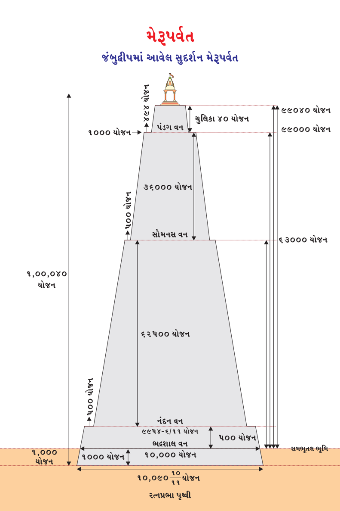
ભદ્રશાલ વનઃ
ભદ્રશાલ વન સુદર્શન મેરુપર્વતની પૂર્વમાં 22,000 યોજન અને પશ્ચિમમાં પણ 22,000 યોજન લાંબુ છે. ઉત્તરમાં 250 યોજન પહોળું અને દક્ષિણમાં 250 યોજન પહોળું છે. તેમાં એક પદ્મવરવેદિકા અને એક વનખંડનો (એટલે એક જ પ્રકારના વૃક્ષોનો વન વિભાગ) સમાવેશ છે. તેમાં ઘણાં દેવી-દેવતાઓ આશરો અને આરામ કરે છે.
સુદર્શન મેરુપર્વતની પૂર્વ દિશાએ ભદ્રશાલ વનમાં 50 યોજન દૂર વિશાળ સિદ્ધાયતન છે. તે 50 યોજન લાંબુ, 25 યોજન પહોળું અને 36 યોજન ઊંચુ છે. સેંકડો સ્તંભ (થાંભલાઓ) ઉપર સ્થિર છે. આજ પ્રમાણે સુદર્શન પર્વતની પશ્ચિમ, ઉત્તર અને દક્ષિણ દિશામાં 50 યોજન લાંબુ, 25 યોજન પહોળું અને 36 યોજન ઊંચુ છે. સેંકડો સ્તંભ (થાંભલાઓ) ઉપર સ્થિર છે. ચારેય દિશાના સિદ્ધાયતન સપ્રમાણ હોય છે. સુદર્શન મેરુપર્વતથી ઇશાન ખૂણામાં (ઉત્તર - પૂર્વની વચ્ચે) 50 યોજન દૂર 1) પદ્મા 2) પદ્મપ્રભા 3) કુમુદા અને 4) કુમુદપ્રભા નામની ચાર દિશાએ ચાર પુષ્કરિણી (વાપિકા, ચોરસ કૂવો) છે. તે 50 યોજન લાંબો અને 25 યોજન પહોળો અને 10 યોજન ઊંડો હોય છે. દરેકમાં પદ્મવરવેદિકા, વનખંડ અને તોરણોથી સજાવેલું સામાન્યપણે હોય છે. ચાર પુષ્કરિણીઓની વચ્ચે 250 યોજન લાંબો, 250 યોજન પહોળો અને 500 યોજન ઊંચો ઇશાનેન્દ્ર (બીજા વૈમાનિક દેવલોકના ઇન્દ્ર) મહારાજાનો મહેલ છે.
વિશેષ નોંધઃ સ્થાનકવાસી સંપ્રદાય સ્થાન - પ્રવચન - શ્રુતજ્ઞાનને અનુસરે છે. તેથી સિદ્ધાયતન શબ્દનો ઉલ્લેખ થાય છે. મૂર્તિપૂજક સંપ્રદાય જિનેશ્વર પ્રતિમા પૂજાને અનુસરે છે. તેથી તેમણે સિદ્ધાયતન શબ્દના સ્થાને જિનાલય શબ્દ સમજવો. જૈન ધર્મ અનેકાંતવાદને માને છે. દરેકે પોતપોતાની ગચ્છ - ગુરુ સમાચારીને પ્રાધાન્યતા આપી શ્રદ્ધાપૂર્વક સ્વીકાર કરવો. જૈન દર્શન કેવળીગમ્ય છે. એટલે કે, કોઇ તત્વ ઉપર શંકા ઉપજે તો તેનું નિવારણ માત્ર કેવળજ્ઞાની ભગવંતો જ કરી શકે!
101
Page 216
મેરૂપર્વત જંબુદ્વીપમાં આવેલ સુદર્શન મેરૂપર્વત ઉપરથી ભદ્રશાલવનનું દ્રશ્ય
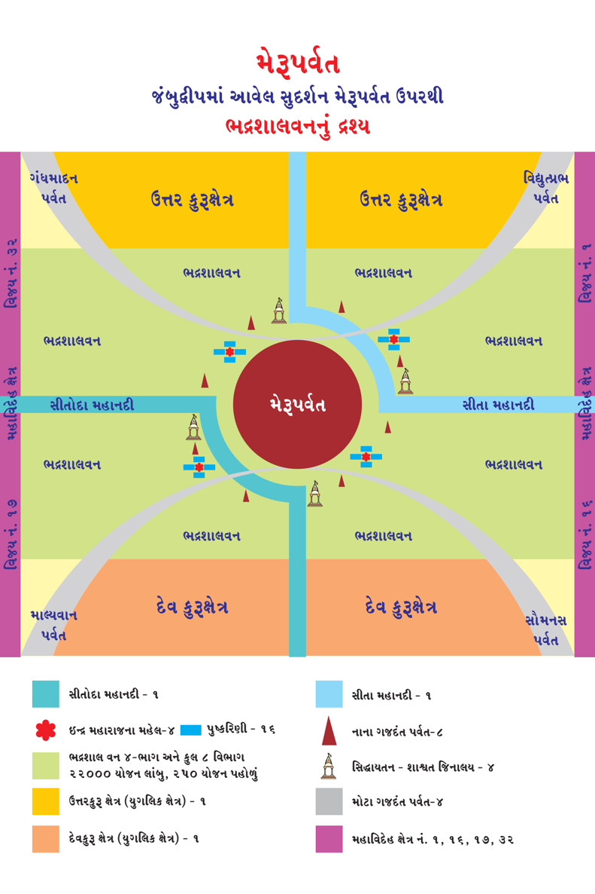Page 217
જૈનમ્ જયતિ શાસનમ્
ભદ્રશાલ વનઃ
સુદર્શન મેરુપર્વતથી અગ્નિખૂણામાં (પૂર્વ-દક્ષિણની વચ્ચે) 50 યોજન દૂર 1) ઉત્પલ ગુલ્મા 2) નલિના 3) ઉત્પલા અને 4) ઉત્પલોજ્જ્વલા નામની ચાર દિશાએ ચાર પુષ્કરિણી (વાપિકા, ચોરસ કૂવો) છે. તે 50 યોજન લાંબો અને 25 યોજન પહોળો અને 10 યોજન ઊંડો હોય છે. દરેકમાં પદ્મવરવેદિકા, વનખંડ અને તોરણોથી સજાવેલું સામાન્યપણે હોય છે. ચાર પુષ્કરિણીઓની વચ્ચે 250 યોજન લાંબો, 250 યોજન પહોળો અને 500 યોજન ઊંચો સૌધર્મેન્દ્ર (પ્રથમ વૈમાનિક દેવલોકના ઇન્દ્ર) મહારાજાનો મહેલ છે.
સુદર્શન મેરુપર્વતથી નૈઋત્ય ખૂણામાં (દક્ષિણ-પશ્ચિમની વચ્ચે) 50 યોજન દૂર 1) ભૃંગા 2) ભૃંગનિભા 3) અંજના અને 4) અંજનપ્રભા નામની ચાર દિશાએ ચાર પુષ્કરિણી (વાપિકા, ચોરસ કૂવો) છે. તે 50 યોજન લાંબો અને 25 યોજન પહોળો અને 10 યોજન ઊંડો હોય છે. દરેકમાં પદ્મવરવેદિકા, વનખંડ અને તોરણોથી સજાવેલું સામાન્ય પણે હોય છે. ચાર પુષ્કરિણીઓની વચ્ચે 250 યોજન લાંબો, 250 યોજન પહોળો અને 500 યોજન ઊંચો સૌધર્મેન્દ્ર (પ્રથમ વૈમાનિક દેવલોકના ઇન્દ્ર) મહારાજાનો મહેલ છે.
સુદર્શન મેરુપર્વતથી વાયવ્ય ખૂણામાં (પશ્ચિમ અને ઉત્તરની વચ્ચે) 50 યોજન દૂર 1) શ્રી કાંતા 2) શ્રી ચંદ્રા 3) શ્રી મહિતા અને 4) શ્રી નિલયા નામની ચાર દિશાએ ચાર પુષ્કરિણી (વાપિકા, ચોરસ કૂવો) છે. તે 50 યોજન લાંબો અને 25 યોજન પહોળો અને 10 યોજન ઊંડો હોય છે. દરેકમાં પદ્મવરવેદિકા, વનખંડ અને તોરણોથી સજાવેલું સામાન્યપણે હોય છે. ચાર પુષ્કરિણીઓની વચ્ચે 250 યોજન લાંબો, 250 યોજન પહોળો અને 500 યોજન ઊંચો ઇશાનેન્દ્ર (બીજા વૈમાનિક દેવલોકના ઇન્દ્ર) મહારાજાનો મહેલ છે.
103
Page 218
જૈન વિજ્ઞાન
ભદ્રશાલ વનઃ
દરેક સિદ્ધાયતન અને ઇન્દ્રના મહેલની વચ્ચે અને વિદિશામાં 2-2 કૂટપર્વતો (શિખરી પર્વત) કુલ 8 પર્વતો હાથીના દાંત સમાન આકારે હોય છે. 1) પદ્મોત્તર 2) નીલવાન 3) સુહસ્તિ 4) અંજનગિરિ 5) કુમુદ 6) પલાશ 7) અવતંસ અને 8) રોચનાગિરિ આવેલ છે. દરેક શિખરી પર્વત હોય છે. દરેક પર્વત સમતલભૂમિથી 500 યોજન ઊંચાઇ, સમતલભૂમિથી 125 યોજન ઉંડાણમાં અને 500 યોજન વ્યાસ (પહોળાઇ) છે.
નંદનવનઃ
સુદર્શન મેરુપર્વતના ભદ્રશાલ વન અને સમતલભૂમિથી 500 યોજન ઉપર નંદનવન આવે છે. મેરુપર્વતની ફરતે વલય (ગોળાઇ) આકારમાં 500 યોજન પહોળાઇમાં નંદનવન પથરાયેલ છે. નંદનવન શરુ થતાં બહારથી સુદર્શન મેરુપર્વતનો વ્યાસ (પહોળાઇ) 9,954-6/11 યોજન છે. ઘેરાવો (પરિધિ) 31,479 યોજન છે. નંદનવનના અંદરના ભાગની ગણતરીએ મેરુપર્વતનો વ્યાસ (પહોળાઇ) 8,954-6/11 યોજન હોય છે. પરિધિ (ઘેરાવો) 28,316- 8/11 યોજન હોય છે. ત્યાં 1 પદ્મવરવેદિકા અને 1-વનખંડ (એક જ પ્રકારના વૃક્ષોનું વન)થી ચારે બાજુથી ઘેરાયેલો છે. ત્યાં દેવી-દેવતાઓ આશરો અને વિશ્રામ કરે છે.
નંદનવનમાં પૂર્વ, દક્ષિણ, પશ્ચિમ અને ઉત્તર ચારેય દિશામાં એકેક સિદ્ધાયતન છે. ઇશાન, અગ્નિ, નૈઋત્ય અને વાયવ્ય દિશામાં ચાર-ચાર પુષ્કરિણીઓ કુલ મળી 16 થાય અને પ્રત્યેક ચાર પુષ્કરિણીની વચ્ચે ઇન્દ્ર મહારાજાનો 1-મહેલ હોય છે કુલ-4 મહેલ હોય છે. સિદ્ધાયતન, પુષ્કરિણી અને મહેલનું માપ (લંબાઇ, પહોળાઇ, ઉંડાઇ અને ઊંચાઇ) ભદ્રશાલ વનમાં વિસ્તારમાં જણાવેલ, તે જ પ્રમાણે હોય છે.
104
Page 219
મેરૂપર્વત જંબુદ્વીપમાં આવેલ સુદર્શન મેરૂપર્વત ઉપરથી નંદનવનનું દ્રશ્ય
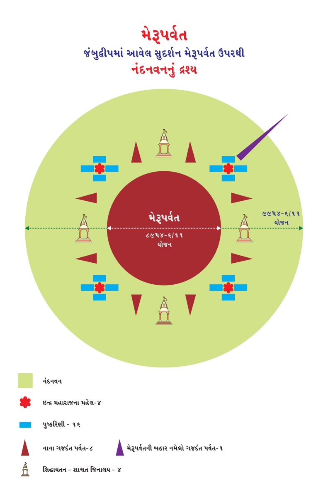Page 220
જૈન વિજ્ઞાન
નંદનવનઃ
નંદનવનમાં 9 કૂટો (શિખર વાળા પર્વત) છે. 1) નંદનવનકૂટ 2) મંદરકૂટ 3) નિષધકૂટ 4) હિમવંતકૂટ 5) રજતકૂટ 6) રુચકકૂટ 7) સાગરચિત્રકૂટ 8) વજ્રકૂટ અને 9) બલકૂટ (ઇશાન ખૂણામાં સુદર્શન મેરુપર્વતની બહાર સુધી નમેલું તેનું શિખર હોય છે.)
સૌમનસ વનઃ
સૌમનસ વન સુદર્શન મેરુપર્વત ઉપર આવેલ નંદનવનની સમતલભૂમિથી 62,500 યોજન ઊંચે અને 500 યોજન પહોળાઇમાં બહારથી અંદરના ભાગે વલય આકારે (ગોળ ફરતે) હોય છે.
સુદર્શન પર્વત, સૌમનસ વનના બહારના છેડેથી તેનો વ્યાસ 4,272- 8/11 યોજન પહોળાઇ અને તેની પરિધિ (ઘેરાવો) 13,511-6/11 યોજન છે. સોમનસ વનની અંદરના ભાગથી સુદર્શન મેરુપર્વતનો વ્યાસ 3,272-8/11 યોજન છે અને પરિધિ (ઘેરાવો) 10,349-3/11 છે.
સોમનસ વનમાં 1-પદ્મવરવેદિકા અને 1-વનખંડ (વનખંડ એક જ પ્રકારના વૃક્ષો હોય છે.) થી ચારે બાજુથી ઘેરાયેલો છે. તેમાં ભદ્રશાલવનની જેમ ચારેય દિશા- વિદિશા મળીને કુલ 4-સિદ્ધાયતન, 16-પુષ્કરિણી (વાપિકા, ચોરસ કૂવો) અને ઇન્દ્ર મહારાજાના 4-મહેલ છે. ત્યાં માત્ર કૂટ પર્વતો નથી. ભદ્રશાલ વનની જેમ દરેકના માપ, વિસ્તાર, અંતર, દિશા વગેરે સમાન છે.
106
Page 221
મેરૂપર્વત જંબુદ્વીપમાં આવેલ સુદર્શન મેરૂપર્વત ઉપરથી સૌમનસવનનું દ્રશ્ય
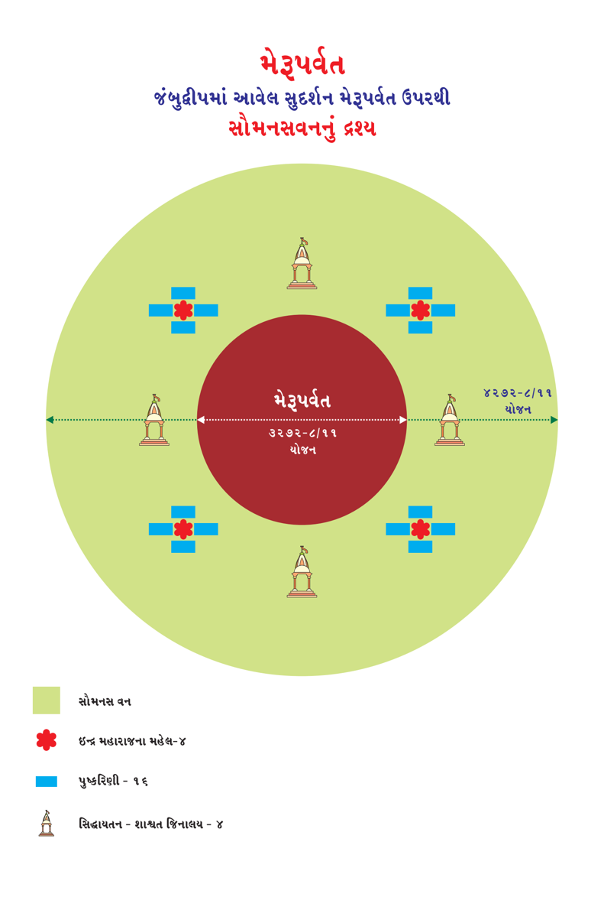Page 222
જૈન વિજ્ઞાન
પંડકવનઃ
સુદર્શન મેરુપર્વતના ઉપર સૌમનસ વનની સમતલ ભૂમિથી 36,000 યોજન ઊંચે, 494 યોજન પહોળાઇમાં મેરુપર્વતની ગોળાઇમાં ફરતે આવેલ છે. સુદર્શન મેરુપર્વત બહારથી 1,000 યોજન વ્યાસ (પહોળાઇ) અને પરિધિ (ઘેરાવો) 3,162 યોજન છે.
પંડકવનમાં 1-પદ્મવર વેદિકા, 1-વનખંડથી ઘેરાયેલ છે. ત્યાં દેવી- દેવતાઓ આશરો અને વિરામ કરે છે. પંડકવનની વચ્ચે મંદર ચૂલિકા શિખર છે. પંડકવનની સમતલભૂમિથી ચૂલિકાનું પ્રમાણ 12 યોજન વ્યાસ (પહોળાઇ) અને પરિધિ (ઘેરાવો) 37 યોજન છે. ચૂલિકાની ઊંચાઇ 40 યોજન છે. મંદર ચૂલિકાના શિખર ભાગે વ્યાસ 4 યોજન છે. સંપૂર્ણપણે વૈડૂર્ય (નીલમ રત્ન) રત્નમય ઉજ્જ્વળ છે. 1-પદ્મવર વેદિકા અને 1-વનખંડથી ચારે તરફથી ઘેરાયેલું છે.
મંદર ચૂલિકાની ઉપર મધ્યમાં સિદ્ધાયતન છે. સિદ્ધાયતન 1-ગાઉ લંબાઇ, અડધો ગાઉ પહોળાઇ અને 1,440 ધનુષ્યની ઊંચાઇ અને સેંકડો થાંભલાઓ ઉપર સ્થિત છે. પંડકવનમાં ચૂલિકાની પૂર્વમાં પંડકવનમાં 50 યોજન દૂર 1-વિશાળ ભવન છે. પંડકવનની ચારેય દિશા-વિદિશામાં કુલ 4-સિદ્ધાયતન, 16-પુષ્કરિણી, ઇન્દ્ર મહારાજના 4-મહેલ વગેરેના માપ, પ્રમાણ, અંતર, દિશા ભદ્રશાલ વન પ્રમાણે જ હોય છે.
પંડકવનમાં તીર્થંકર પરમાત્માના સ્નાત્ર અભિષેક માટે કુલ 4-અભિષેક
શીલા 1) પાંડુ શિલા 2) પાંડુકબલ શિલા 3) રક્ત શિલા 4) રક્તકંબલ શિલા છે.
પાંડુ શિલા મંદર ચૂલિકાની પૂર્વમાં પંડકવનની સીમાના અંતે ઉત્તર - દક્ષિણ 500 યોજન લાંબી અને પૂર્વ - પશ્ચિમ 250 યોજન પહોળી અડધા ગોળાકારે અને 4 યોજન જાડી છે. તે સંપૂર્ણપણે સુવર્ણમય અને સ્વચ્છ છે.
108
Page 223
મેરૂપર્વત જંબુદ્વીપમાં આવેલ સુદર્શન મેરૂપર્વત ઉપરથી પંડગવન (પંડકવન)નું દ્રશ્ય
Page 224
જૈન વિજ્ઞાન
પંડકવનઃ
પાંડુ શિલા પદ્મવર વેદિકા અને વનખંડથી ચારે તરફથી ઘેરાયેલ છે. શિલાની ચારે બાજુ ત્રણ-ત્રણ પગથિયા અને તોરણોથી સજાવેલ છે. શિલા ઉપર સમતલ ભૂમિ અને દેવી-દેવતાઓ વિશ્રામ કરે છે. તેના ઉપર ઉત્તર અને દક્ષિણમાં એકેક એટલે કે, બાળ પ્રભુના સ્નાત્ર (જન્મ અભિષેક) માટે 2-અભિષેક સિંહાસન છે.
સિંહાસન 500 ધનુષ્યની લંબાઇ, 500 ધનુષ્યની પહોળાઇ અને 250 ધનુષ્યની ઊંચાઇ છે. ઉત્તર દિશામાં આવેલ સિંહાસન ઉપર પૂર્વ મહાવિદેહ ક્ષેત્રના વિજય નં. 1 થી વિજય નં. 8 માં જન્મ લેતાં તીર્થંકર પરમાત્માના સ્નાત્ર મહોત્સવ થાય છે.
દક્ષિણ દિશામાં આવેલ સિંહાસન ઉપર પૂર્વ મહાવિદેહ ક્ષેત્રના વિજય નં. 9 થી વિજય નં. 16 માં જન્મ લેતાં તીર્થંકર પરમાત્માના સ્નાત્ર મહોત્સવ થાય છે. પાંડુકબલશિલા મંદર ચૂલિકાની દક્ષિણમાં પંડકવનની સીમાના અંતે ઉત્તર - દક્ષિણ 250 યોજન પહોળાઇ અને પૂર્વ - પશ્ચિમ 500 યોજન લાંબી અડધા ગોળાકારે અને 4 યોજન જાડી છે. તે સંપૂર્ણપણે સફેદ સુવર્ણમય અને સ્વચ્છ છે.
પાંડુકબલશિલા પદ્મવર વેદિકા અને વનખંડથી ચારે તરફથી ઘેરાયેલ છે. શિલાની ચારે બાજુ ત્રણ-ત્રણ પગથિયા અને તોરણોથી સજાવેલ છે. શિલા ઉપર સમતલ ભૂમિ અને દેવી-દેવતાઓ વિશ્રામ કરે છે. તેના ઉપર પ્રભુના સ્નાત્ર માટે 1- અભિષેક સિંહાસન છે. સિંહાસન 500 ધનુષ્યની લંબાઇ, 500 ધનુષ્યની પહોળાઇ અને 250 ધનુષ્યની ઊંચાઇ છે. આ સિંહાસનમાં ભરતક્ષેત્ર માં જન્મેલ તીર્થંકર પરમાત્માનું જન્મ અભિષેક થાય છે.
110
Page 225
જૈનમ્ જયતિ શાસનમ્
પંડકવનઃ
રક્તશિલા મંદર ચૂલિકાની પશ્ચિમમાં પંડકવનની સીમાના અંતે ઉત્તર - દક્ષિણ 500 યોજન લાંબી અને પૂર્વ - પશ્ચિમ 250 યોજન પહોળી અડધા ગોળાકારે અને 4 યોજન જાડી છે. તે સંપૂર્ણપણે રક્ત સુવર્ણમય અને સ્વચ્છ છે.
રક્તશિલા પદ્મવર વેદિકા અને વનખંડથી ચારે તરફથી ઘેરાયેલ છે. શિલાની ચારે બાજુ ત્રણ-ત્રણ પગથિયા અને તોરણોથી સજાવેલ છે. શિલા ઉપર સમતલ ભૂમિ અને દેવી-દેવતાઓ વિશ્રામ કરે છે. તેના ઉપર ઉત્તર અને દક્ષિણમાં પ્રભુના સ્નાત્ર માટે 2 અભિષેક સિંહાસન છે. સિંહાસન 500 ધનુષ્યની લંબાઇ, 500 ધનુષ્યની પહોળાઇ અને 250 ધનુષ્યની ઊંચાઇ છે.
ઉત્તર દિશામાં આવેલ સિંહાસન ઉપર પશ્ચિમ મહાવિદેહ ક્ષેત્રના વિજય નં. 25 થી વિજય નં. 32માં જન્મ લેતાં તીર્થંકર પરમાત્માના સ્નાત્ર મહોત્સવ થાય છે.
દક્ષિણ દિશામાં આવેલ સિંહાસન ઉપર પશ્ચિમ મહાવિદેહ ક્ષેત્રના વિજય નં.
17 થી વિજય નં. 24માં જન્મ લેતાં તીર્થંકર પરમાત્માના સ્નાત્ર મહોત્સવ થાય છે.
રક્તકંબલશિલા મંદર ચૂલિકાની ઉત્તરમાં પંડકવનની સીમાના અંતે ઉત્તર - દક્ષિણ 250 યોજન પહોળાઇ અને પૂર્વ - પશ્ચિમ 500 યોજન લાંબી અડધા ગોળાકારે અને 4 યોજન જાડી છે. તે સંપૂર્ણપણે રક્ત સુવર્ણમય અને સ્વચ્છ છે.
111
Page 226
જૈન વિજ્ઞાન
પંડકવનઃ
રક્તકબલશિલા પદ્મવર વેદિકા અને વનખંડથી ચારે તરફથી ઘેરાયેલ છે. શિલાની ચારે બાજુ ત્રણ-ત્રણ પગથિયા અને તોરણોથી સજાવેલ છે. શિલા ઉપર સમતલ ભૂમિ અને દેવી-દેવતાઓ વિશ્રામ કરે છે. તેના ઉપર પ્રભુના સ્નાત્ર માટે 1- અભિષેક સિંહાસન છે. સિંહાસન 500 ધનુષ્યની લંબાઇ, 500 ધનુષ્યની પહોળાઇ અને 250 ધનુષ્યની ઊંચાઇ છે. સિંહાસનમાં ઐરાવતક્ષેત્ર માં જન્મેલ તીર્થંકર પરમાત્માનું જન્મ અભિષેક થાય છે.
આ પ્રમાણે સુદર્શન મેરુપર્વત ઉપર 4 શિલાઓ ઉપર 6-સિંહાસનો છે. ત્યાં ઉત્કૃષ્ટપણે (વધુમાં વધુ) મહાવિદેહક્ષેત્રના 4-તીર્થંકર, 1-ભરતક્ષેત્ર અને 1 - ઐરાવતક્ષેત્રના તીર્થંકરોના જન્મ અભિષેક થાય છે. તીર્થંકર પરમાત્માના જન્મ હંમેશા મધ્યરાત્રિએ થાય છે.
કાળની ભિન્નતાના કારણે અઢીદ્વીપમાં એક સાથે 30 તીર્થંકરોનો જન્મ થતો નથી. પરંતું ઉત્કૃષ્ટપણે 5-ઐરાવતક્ષેત્રના-5 તીર્થંકર, 5-ભરતક્ષેત્રના-5 તીર્થંકર અને પ-મહાવિદેહ ક્ષેત્રના 20 તીર્થંકરોના જન્મ થાય છે.
સુદર્શન મેરુપર્વતના દ્રવ્ય(પદાર્થ)થી ત્રણ વિભાગ થાય છે. 1) નીચેનો ભાગ 2) વચ્ચેનો ભાગ અને 3) ઉપરનો ભાગ. નીચેનો ભાગ (નંદનવન સુધી) 1) માટી 2) પથ્થર 3) હીરક અને 4) કાંકરા વાળો છે. વચ્ચેનો ભાગ (સૌમનસવન સુધી) 1) અંકરત્ન 2) સ્ફટિક 3) સુવર્ણ(સોનુ) અને 4) રજત(ચાંદી) નો હોય છે. ઉપરનો ભાગ (પંડકવન સુધી) જંબુનદ સુવર્ણમય છે.
સુદર્શન મેરુપર્વતને મંદર પર્વત પણ કહેવાય છે. મંદર નામના પરમ ઋદ્ધિશાળી અને 1-પલ્યોપમના આયુષ્ય વાળા દેવ રહે છે. તેથી તેને મંદર પર્વત કહેવાય છે. આ નામ શાશ્વત છે.
112
Page 227
જૈનમ્ જયતિ શાસનમ્
બાકીના 4 મેરુપર્વત 1) વિજય મેરુ 2) અચલ મેરુ 3) મંદર મેરુ અને 4) વિદ્યુન્માલિ મેરુ સમભૂમિતલથી 1,000 ઊંડે છે. સમભૂમિતલતી 84,000 યોજન ઊંચાઇમાં આવેલ છે. નીચેથી પહોળાઇ 10,000 યોજન પ્રમાણ વ્યાસ (પહોળાઇ) છે. ઉપર શિખરે 1,000 યોજન વ્યાસ (પહોળાઇ) છે. તેની ઉપર 40 યોજન મંદરચૂલિકા છે. તેથી કુલ ઊંચાઇ 85,040 યોજન ચારેય પર્વતની છે.
સુદર્શન મેરુપર્વતની જેમ, ચારેય મેરુપર્વતના કુલ ચાર-ચાર વન (દરેક વન એક પ્રકારના વૃક્ષોનું હોય) છે. દરેક વનમાં 4-સિદ્ધાયતન, 16-પુષ્કરિણી, ઇન્દ્ર મહારાજાના 4-મહેલ, 4-શિલા, 1-મુખ્ય સિદ્ધાયતન, 6-તીર્થંકર પરમાત્માને જન્મ અભિષેક માટેના સિંહાસન વગેરેનું માપ, વિસ્તાર, દિશા, સંખ્યા એક સમાન છે.
ચારેય મેરુપર્વતના ત્રણ વિભાગ થાય છે અને સુદર્શન મેરુપર્વતમાં જણાવેલ
વિશેષ દ્રવ્યોથી બનેલ છે. તફાવત માત્ર મેરુપર્વતની સંપૂર્ણ ઊંચાઇનો છે.
વિશેષતાઃ ધાતકીખંડના પૂર્વ દિશામાં આવેલ મેરુપર્વતના શિખરે પ્રભુના જન્મ અભિષેક ભરતક્ષેત્ર માં જન્મેલ તીર્થંકરના દક્ષિણ દિશામાં આવેલ શિલા ઉપર, ઉત્તર દિશામાં આવેલ શિલામાં ઐરાવતક્ષેત્રના, પૂર્વ દિશાની શિલા ઉપર પૂર્વ મહાવિદેહક્ષેત્રના અને પશ્ચિમ દિશાની શિલા ઉપર પશ્ચિમ મહાવિદેહ ક્ષેત્રમાં જન્મેલા તીર્થંકર પરમાત્માનો જન્મ અભિષેક થાય છે. તે જ પ્રમાણે ધાતકીખંડના પશ્ચિમ મેરુપર્વતે, અર્ધ પુષ્કરદ્વીપના પૂર્વ અને પશ્ચિમ મેરુપર્વતે તે-તે ક્ષેત્રના તીર્થંકર દિશા પ્રમાણે શિલા ઉપર જન્મ અભિષેક જંબુદ્વીપના સુદર્શન મેરુશિખરની જેમ થાય છે.
113
Page 228
મેરૂપર્વત જંબુદ્વીપમાં આવેલ સુદર્શન મેરૂપર્વત ઉપરથી સંપૂર્ણ સુદર્શન મેરૂપર્વત
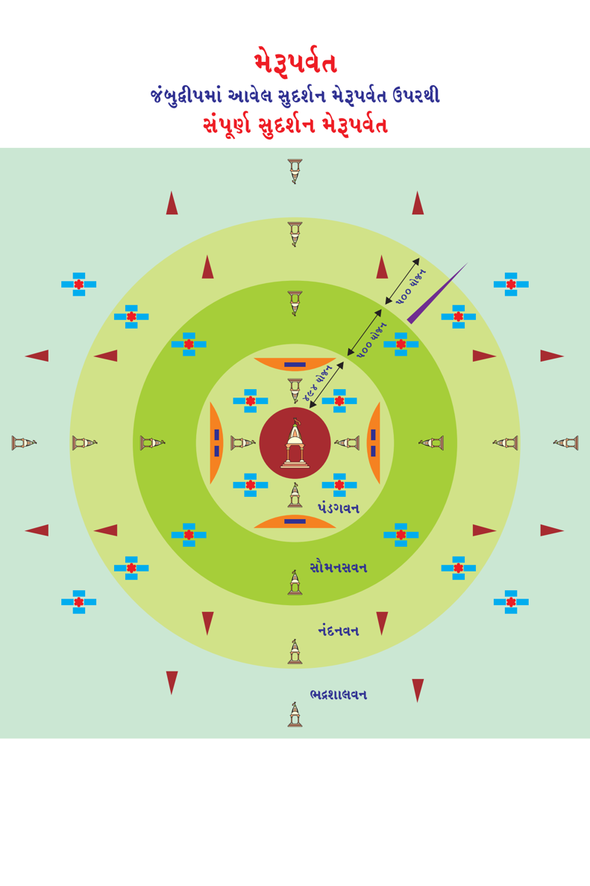Page 229
જૈનમ્ જયતિ શાસનમ્
તિરછાલોક લોક ઉપર મેરુપર્વત વિશે આપે વિસ્તારમાં જાણકારી મેળવી. જેમ નંદીશ્વર દ્વીપે શાશ્વત તીર્થ 52 જિનાલય છે, તેમ મેરુપર્વત ઉપર કુલ 85 શાશ્વત તીર્થ છે. આજે આપણે વિસ્તારથી જાણીએ...
જંબુદ્વીપમાં કેન્દ્રમાં સુદર્શન મેરુપર્વત છે. તે કુલ 4 વનથી વિભાજિત છે. 1)
ભદ્રશાલવન, 2) નંદનવન, 3) સૌમનસવન અને 4) પંડકવન (પંડગવન).
દરેક વનમાં મેરુપર્વતથી 50 યોજન દૂર પૂર્વ દિશા, દક્ષિણ દિશા, પશ્ચિમ દિશા અને ઉત્તર દિશા માં એકેક શાશ્વત જિનાલય છે. શાશ્વત જિનાલય 50 યોજન લાંબુ, 25 યોજન પહોળું અને 36 યોજન ઊંચુ છે. સેંકડો સ્તંભ (થાંભલાઓ) ઉપર સ્થિર છે.
પ્રત્યેક જિનાલયમાં શાશ્વતા જિન 1) ઋષભાનન, 2) ચંદ્રાનન, 3) વારિષેણ અને 4) વર્ધમાન ચૌમુખજીની પ્રતિમા છે. પ્રત્યેક પ્રતિમા રત્નમય 500 ધનુષ્યની પદ્માસન મુદ્રામાં છે.
સુદર્શન મેરુપર્વતની ઉપર ચોથા વન, પંડકવનમાં 40 યોજન મંદર ચૂલિકા ની ઉપર મધ્યમાં 1 શાશ્વત જિનાલય છે. શાશ્વત જિનાલય 1-ગાઉની લંબાઇ, અડધો ગાઉની પહોળાઇ અને 1,440 ધનુષ્યની ઊંચાઇ અને સેંકડો થાંભલાઓ ઉપર સ્થિત છે.
મંદર ચૂલિકા (શિખર, ચોટી) ઉપર જિનાલયમાં શાશ્વતા જિન 1) ઋષભાનન, 2) ચંદ્રાનન, 3) વારિષેણ અને 4) વર્ધમાન ચૌમુખજીની પ્રત્યેક પ્રતિમા રત્નમય પદ્માસન મુદ્રામાં છે.
115
Page 230
જૈન વિજ્ઞાન
સુદર્શન મેરુપર્વત ઉપર કુલ 17 શાશ્વત જિનાલય હોય છે. ભદ્રશાલવન માં 4 શાશ્વત જિનાલય, નંદનવન માં 4 શાશ્વત જિનાલય, સૌમનસવન માં 4 શાશ્વત જિનાલય, પંડકવન માં 4 શાશ્વત જિનાલય અને મંદર ચૂલિકા ઉપર 1 શાશ્વત જિનાલય મળી કુલ 17 શાશ્વત જિનાલય હોય છે.
અઢીદ્વીપ (મનુષ્ય લોક)માં કુલ 5 મેરુપર્વત હોય છે. 1) સુદર્શન મેરુ, 2) વિજય મેરુ, 3) અચલ મેરુ, 4) મંદર મેરુ અને 5) વિદ્યુન્માલિ મેરુ. જંબુદ્વીપમાં એક મેરુપર્વત, ઘાતકીખંડમાં પૂર્વ ઘાતકીખંડ અને પશ્ચિમ ઘાતકીખંડમાં એકેક મેરુપર્વત તેમજ પુષ્કરદ્વીપમાં પૂર્વ પુષ્કરદ્વીપ અને પશ્ચિમ પુષ્કરદ્વીપમાં એકેક.
પ્રત્યેક મેરુપર્વત ઉપર જંબુદ્વીપના સુદર્શન મેરુપર્વતની જેમ ચાર-ચાર વન (ભદ્રશાલ, નંદન, સૌમનસ અને પંડક)થી વિભાજિત હોય છે. દરેક વનમાં મેરુપર્વતથી પૂર્વ, દક્ષિણ, પશ્ચિમ અને ઉત્તર દિશામાં 50 યોજન દૂર શાશ્વત જિનાલય જે. તે જ પ્રમાણે પંડકવનમાં મંદર ચૂલિકા ઉપર એક શાશ્વત જિનાલય છે. 85 શાશ્વત જિનાલય છે. દરેક કુલ 17 શાશ્વત જિનાલય X 5 મેરુપર્વત જિનાલયમાં ચાર શાશ્વતા જિનની પ્રતિમા પદ્માસન મુદ્રામાં બિરાજમાન છે.
=
શાશ્વત જિનાલય અકૃત્રિમ છે. તેમાં બિરાજમાન પ્રતિમાં પણ અકૃત્રિમ છે. અકૃત્રિમ એટલે પ્રતિમા અને જિનાલય કોઇ દેવો કે મનુષ્યો દ્વાર નિર્માણ નથી પામી. પ્રતિમા દેવો દ્વારા પૂજનીય છે.
116
Page 231
જૈનમ્ જયતિ શાસનમ્
અષ્ટાપદ, અષ્ટ એટલે આઠ, પદ એટલે પગથિયા. અષ્ટાપદ તીર્થનું નિર્માણ શ્રી ભરત ચક્રવર્તીએ કરાવ્યું હતું. શ્રી ભરત ચક્રવર્તીએ શ્રી ઋષભદેવ (આદિનાથ ભગવાન)ના અગ્નિ સંસ્કાર ભૂમિની નજીકમાં ત્રણ ગાઉ ઊંચો સિંહનિષદ્યા નામનું જિનાલય રત્નમય પથ્થરથી વર્દ્ધકિરત્ન (કુશળ શિલ્પકાર) પાસેથી નિર્માણ કરાવ્યું હતું.
સિંહનિષદ્યા જિનાલયની ચારેય બાજુ સમવસરણની જેમ કોતરણી યુક્ત સ્ફટિક રત્નના રમણીય 4-પ્રવેશદ્વાર બનાવ્યા હતાં. દરેક દ્વારની બન્ને તરફ રત્નમય ચંદનના 16 કળશોની રચના કરી હતી. 16-16 રત્નમય તોરણો, અષ્ટમંગલની 16-16 હરોળ અને ચાર દિક્પાલોની સભાની જેમ દરેક દ્વારે વિશાળ મુખમંડપોની રચના કરાવી હતી.
ચાર મુખમંડપોની આગળ ચાલતાં-ચાલતાં શ્રી વલ્લીમંડપ ની અંદર ચાર પ્રેક્ષાસદન મંડપોની રચના કરવામાં આવી હતી. દરેક પ્રેક્ષામંડપોની વચ્ચે વજ્રમય અક્ષવાટ રચી દરેક અક્ષવાટની વચ્ચે મનોહર સિંહાસન બનાવ્યું હતું. દરેક પ્રેક્ષામંડપની આગળ એકેક મણિપીઠિકા ની રચના કરી હતી. મણિપીઠિકાની ઉપર રત્નના મનોહર ચૈત્યસ્તૂપ (નાનકડી દેરી) બનાવ્યા હતા. દરેક ચૈત્યસ્તૂપમાં આકાશમાં પ્રકાશ થાય તેવી મોટી મણિપીઠિકા ની રચના કરાવી હતી.
મણિપીઠિકાની ઉપર અને ચૈત્યસ્તૂપની બરાબર સામે 500 ધનુષ્યની રત્નમય ઋષભાનન, ચંદ્રાનન, વારિષેણ અને વર્ધમાન શાશ્વત જિનપ્રતિમા પદ્માસને ચારેય દિશા સન્મુખ (ચૌમુખજી) બિરાજમાન હતી.
117
Page 232
જૈન વિજ્ઞાન
શ્રી ભરત ચક્રવર્તીએ ચૌમુખજીમાં દરેક પ્રતિમા રત્નની મનોહર , નંદીશ્વર દ્વીપમાં શાશ્વત જિનાલય જેવી પ્રતિમા ઘડાવી સ્થાપના કરાવેલ. દરેક ચૈત્યસ્તૂપની (દેરી) આગળ અમૂલ્ય માણિક્ય રત્નની પીઠિકા રચાવી. દરેક પીઠિકા ઉપર એક-એક ચૈત્યવૃક્ષની રચના કરાવી. દરેક ચૈત્યવૃક્ષની બાજુમાં બીજી મણિપીઠિકા બનાવી તેના ઉપર ઇન્દ્ર ધ્વજ રચાવ્યો. ઇન્દ્ર ધ્વજની આગળ ત્રણ પગથીયા અને તોરણોવાળી નંદા પુષ્કરિણી (વાપિકા, ચોરસ કૂવો) બનાવડાવી. તે પુષ્કરિણી સ્વચ્છ, નિર્મળ અને વિવિધ કમળોથી શોભાયમાન હતી.
સિંહનિષદ્યા જિનાલયની વચ્ચે મોટી મણિપીઠિકા બનાવી સમવસરણની જેમ તેના વચ્ચે દેવછંદક ની રચના કરાવી. તેની ઉપર વિવિધ રંગના વસ્ત્રનો ચંદરવો બનાવ્યો. જિનાલયની દિવાલોમાં મણિમય ગવાક્ષ (ગોખલા, ઝરુખા) રચાવ્યા હતા. દેવચ્છંદની ઉપર ધ્યાન મુદ્રામાં હોય તેવી વર્તમાન અવસર્પિણી કાળના 24 તીર્થંકર પરમાત્માના દેહના પ્રમાણ (શરીર ઊંચાઇ) જેટલી (દા. ત. શ્રી આદિનાથ ભગવાનની 500 ધનુષ્યની, શ્રી અજિતનાથ દાદા 450 ધનુષ્ય થી શ્રી મહાવીરસ્વામીના 7 હાથ પ્રમાણની) પ્રતિમા, તેમજ તે-તે તીર્થંકર પરમાત્માના વર્ણવાળી (16 પ્રતિમાઓ સુવર્ણની, 2 પ્રતિમા શ્યામ રત્નોની, 2 પ્રતિમા સ્ફટિક રત્નોની, 2 પ્રતિમા નીલમરત્નની, 2 પ્રતિમા મણિરત્નની પદ્માસન મુદ્રામાં બિરાજમાન કરાવી હતી.
118
Page 233
જૈનમ્ જયતિ શાસનમ્
દરેક પ્રતિમાઓના નખ રોહિતાક્ષ મણિ (લાલ રંગ)ના આભાસવાળા અને અંકરત્ન (સફેદ રંગ)ના હતા. નાભિ, વાળના મૂળ, જીભ, તાળવું, શ્રીવત્સ, સ્તનભાગ અને હાથ-પગના તળિયા સુવર્ણના હતાં. પાંપણો, આંખની કીકીઓ, રૂવાંટા, ભ્રમર, વાળ રિષ્ટરત્ન (શ્યામ વર્ણ)ના હતાં. હોઠ પરવાળામય (લાલ રંગ) હતાં. દાંત સ્ફટિકરત્નના (સફેદ) હતાં. મસ્તકનો ભાગ વજ્રમય હતો. નાક અંદરથી રોહિતાક્ષ મણિના આભાસવાળી અને સુવર્ણની હતી. દરેક પ્રતિમાની દ્રષ્ટિઓ લોહિતાક્ષ મણિ અને અંકમણિથી બનાવેલ હતી. દરેક પ્રતિમાઓ અત્યંત શોભાયમાન હતી.
દરેક પ્રતિમાની પાછળ યોગ્ય માપવાળી છત્રધર (હાથમાં છત્ર લઈને ઊભા રહેનાર)ની રત્નમયી પ્રતિમા બનાવી હતી. છત્રધાર પ્રતિમાએ કુરંટક ફૂલની માળા, મોતી અને પરવાળા વડે ગૂંથેલી અને સ્ફટિક મણિના દંડવાળા સફેદ છત્ર ધર્યા હતાં. દરેક પ્રતિમાની બન્ને બાજુએ રત્નના ચામર ધરનારની બે પ્રતિમાઓ હતી. આગળ નાગ, યક્ષ, ભૂત અને કુંડધરની બે-બે પ્રતિમાઓ હતી. અંજલિ જોડીને ઊભેલી નાગ આદિ દેવોની રત્નમય પ્રતિમાઓ શોભાયમાન હતી.
દેવચ્છંદક ઉપર ઉજ્જવળ રત્નના 24 ઘંટાઓ, માણિક્યના દર્પણો, યોગ્ય સ્થાને મૂકેલ સુવર્ણના દીવાઓ, રત્નના કરંડિયા, ગોળાકાર પુષ્પચંગેરીઓ, ઉત્તમ અંગલૂંછણા, આભૂષણના ડબલા, સોનાના ધૂપિયા અને આરતીઓ, રત્નોના મંગળદીવાઓ, ઝારીઓ, થાળો...
119
Page 234
જૈન વિજ્ઞાન
સુવર્ણનાં પાત્રો, રત્નના ચંદનકળશો, રત્નના સિંહાસનો, રત્નના અષ્ટમંગલ, સુવર્ણના ઘીના ડબ્બાઓ, ધૂપ રાખવા માટે સુવર્ણના પાત્રો વગેરે 24 તીર્થંકર પરમાત્માની દરેક પ્રતિમાઓ પાસે રાખવામાં આવી હતી. આ પ્રમાણે ત્રણલોકમાં અતિ સુંદર એવું સિંહનિષદ્યા જિનાલય વિધિયુક્ત શ્રી ભરત ચક્રવર્તીની આજ્ઞાથી વર્દ્ધકિરત્ને બનાવી આપ્યુ હતું. જિનાલય એવી કુશળતાથી બનાવ્યું હતું કે દરેક પથ્થરના સાંધાઓ એકમેક થયા હતાં, જાણે એવું લાગે કે એક જ પથ્થરથી જિનાલય નિર્માણ થયું હોય!
જિનાલયના મધ્યભાગે વિવિધ મુદ્રાયુક્ત માણેકરત્નની પૂતળીઓ ગોઠવેલ હતી. દરેક દ્વારની બન્ને તરફ ચંદનરસથી લીંપેલા બે કુંભો મૂકેલા હતાં. જિનાલયમાં હંમેશા કપૂર, અગરુ અને કસ્તુરીથી બનાવેલ ધૂપના ધૂમાડાયુક્ત વાતાવરણ રહેતું.
સિંહનિષદ્યા જિનાલયમાં શ્રી ભરત ચક્રવર્તીના નિર્વાણ પામેલા 99 ભાઇઓની દિવ્ય રત્નમય પ્રતિમાઓની સ્થાપના કરાવી. પોતે પ્રભુની સેવા કરતાં હોય તેવી એક પ્રતિમા પોતાની પણ ત્યાં સ્થાપિત કરાવી.
સિંહનિષદ્યા જિનાલયની બહાર શ્રી આદિનાથ દાદાનો એક સ્તૂપ (પગલાંની દેરી) બનાવડાવી હતી. તેની બાજુમાં પોતાના 99 ભાઇના પગલાંની દેરીઓ બનાવી (શ્રી આદિનાથ દાદા સાથે એક સમયે 108 મહાત્માઓ નિર્વાણ પામ્યાં હતાં, તેમાં 99 મહાત્માઓ દાદાના પુત્ર તેમજ શ્રી ભરત ચક્રવર્તીના ભાઇઓ પણ હતાં).
120
Page 235
જૈનમ્ જયતિ શાસનમ્
નિર્વાણ પામેલ શ્રી આદિનાથ દાદા અને 99 ભાઇઓના પગલાંની દેરી પાસે દર્શને આવનાર લોકો દ્વારા આશાતના ન થાય એ હેતુથી લોઢાના (લોખંડ) યંત્રમય સુરક્ષા પુરુષો ઊભા રાખ્યા હતાં.
શ્રી ભરત ચક્રવર્તીએ પોતાના દંડ શસ્ત્રથી પર્વતના દાંતા પાડ્યા જેથી સીધા અને ઊંચા થાંભલાની જેમ તેના ઊપર લોકો ચડી ન શકે! પર્વતની ચોમેર ફરતે એકેક યોજનને અંતરે આઠ પગથિયા બનાવ્યા જેથી લોકોએ તે પર્વતને અષ્ટાપદ નામ આપ્યું. તેમજ આ પર્વત હરાદ્રિ, કૈલાશ અને સ્ફટકાદ્રિ તરીકે પણ ઓળખાય છે. દરેક પ્રતિમાની પ્રતિષ્ઠા શ્રી ભરત ચક્રવર્તીએ ચારણમુનિઓ પાસે કરાવેલ.
ચોથા આરાના અંત સુધી અષ્ટાપદ તીર્થ વિદ્યમાન હતો. બીજા તીર્થંકર શ્રી અજિતનાથ દાદાના સમયમાં થયેલા બીજા ચક્રવર્તી શ્રી સગરના 60,000 પુત્રો, પંચમ આરામાં મહામૂલ્ય રત્નો અને સુવર્ણથી બનેલ સિંહનિષદ્યા તીર્થને લાલચું, ચોરો-લૂંટારાઓ અને વિવિધ ઉપદ્રવોથી નુકશાન થશે તેવા ડરથી શ્રી અષ્ટાપદ તીર્થની રક્ષા માટે શસ્ત્રથી 1,000 યોજન ઊંડી ખાઇ અષ્ટાપદ તીર્થની ચોમેર (ચારે તરફ) ખોદી, તેમાં ગંગાનદીના પાણીનું ખાઇમાં વહેણ કરાવતાં પાણી ખાઇમાં ભરાતાં નાગકુમાર દેવોના ભવનોને નુક્સાન થતાં ક્રોધિત થઇ 60,000 સગરપૂત્રોને ભસ્મ કરી નાખે છે.
અષ્ટાપદ તીર્થ અશાશ્વત તીર્થ છે. અષ્ટાપદ તીર્થ સામાન્ય લોકોથી ચડી શકાય
તેવો પર્વત ન હતો. માત્ર લબ્ધિધારી મનુષ્યોથી જ આ તીર્થના દર્શન થઇ શકે!
121
Page 236
જૈન વિજ્ઞાન
મનુષ્ય જીવમાં ત્રિષ્ષ્ઠીશલાકા પુરુષોમાં તીર્થંકર પરમાત્મા બાદ બીજા ક્રમાંકે ચક્રવર્તી મહાપુરુષ આવે છે. જે વ્યક્તિ ચક્રને અનુસરતા છ ખંડ ઉપર વિજય મેળવી તેનું આધિપત્ય ભોગવે તેને ચક્રવર્તી કહેવાય છે. ચક્રવર્તી તીર્થંકરની જેમજ ઉત્તમ જાતિ, ગોત્ર અને રાજકુળમાં જ જન્મ ધારણ કરે છે. ચક્રવર્તીની માતા, તીર્થંકરની માતાની જેમ 14 મહાસ્વપ્નો જૂએ છે પણ તે સ્વપ્નાઓ તીર્થંકરની માતાના સ્વપ્ના કરતાં કંઇક ઝાંખા હોય છે. ચક્રવર્તી કળા આચાર્યની હાજરી માત્રથી શસ્ત્ર, શાસ્ત્ર તથા સમસ્ત કળાઓમાં વિશારદ (કુશળ જ્ઞાની) થાય છે.
5ાંચ ભરતક્ષેત્ર, પાંચ ઐરાવતક્ષેત્ર અને પાંચ મહાવિદેહ ક્ષેત્રમાં ચક્રવર્તી મહાપુરુષોના જન્મ થાય છે. દરેક ક્ષેત્રમાં છ ખંડ હોય છે. એટલે કે, ભરતક્ષેત્રમાં છ ખંડ હોય છે. ઐરાવતક્ષેત્રમાં છ ખંડ હોય છે અને મહાવિદેહ ક્ષેત્રમાં 32 વિજય છે, તે દરેક વિજયમાં છ ખંડ હોય છે. છ ખંડના વિજેતા ચક્રવર્તી મહારાજા હોય છે. એકચક્રી સુશાસન કરે છે.
અસંખ્યાતકાળ પછી ચક્રવર્તી મહારાજનો જન્મ થાય છે. ભરતક્ષેત્ર - ઐરાવતક્ષેત્રમાં અવસર્પિણી કાળ અને ઉત્સર્પિણી કાળના છ-છ આરા પ્રવર્તાય છે. મહાવિદેહ ક્ષેત્રમાં અવસર્પિણી કાળના સદાય ચોથા આરા જેવો સમય હંમેશા વર્તાય છે. જ્યારે ચક્રવર્તી મહારાજાનો જન્મ થાય અને તેમના જીવિત અવસ્થામાં ક્યારેય પણ વાસુદેવ, બળદેવ અને પ્રતિવાસુદેવનો જન્મ ન થાય!
122
Page 237
જૈનમ્ જયતિ શાસનમ્
ચક્રવર્તી મહારાજા યશસ્વી, શ્રેષ્ઠ પુરુષ હોવાથી ઉત્તમ, ઉત્તમ વંશમાં જન્મ થવાથી અભિજાત (કુલીન) હોય છે. તેઓ સાહસિક, આંતરિક બળ તથા પરાક્રમ ગુણોથી યુક્ત હોય છે. તેઓનું શરીરનું પ્રશસ્ત વર્ણ આદિ (વગેરે) અને સુદ્રઢ બંધારણ (શરીરની રચના) હોય છે. બુદ્ધિ, અર્થને ધારણ કરનારી ધારણા શક્તિ, પ્રાપ્ત કરવા જેવું, આદરવા જેવી બુદ્ધિ, શરીરની આકૃતિ, શીલ આચાર, પ્રકૃતિ વગેરે ઉત્તમ હોય છે. તેઓના આજ્ઞા, ઐશ્વર્ય, શરીર, શોભા અને ગતિ ઉત્કૃષ્ટ હોય છે. તેઓ વિવિધ પ્રકારના પ્રભાવશાળી વચન બોલવામાં હોંશિયાર હોય છે તેમજ અન્યોને પરાજય કરે તેવા પ્રતાપી હોય છે. આયુષ્ય બળવાન, શરીર બળયુક્ત હોય છે. તેઓનું શરીરના હાડકાનું બંધારણ પ્રથમ વજ્રઋષભનારાચ સંઘયણ (હાડકાંનું બંધારણ, મજબૂતાઈ) અને સમચતુરસ્ર (જૈન વિજ્ઞાન - તીર્થંકર પરમાત્માના લેખમાં સમજાવેલ છે.)
ચક્રવર્તી મહારાજની શરીર રચનાઃ
1) ચક્રવર્તી મહારાજાની હથેળી અને પગના તળીયા મત્સ્ય, ધોંસરું, ઝારી, વર્ધમાનક, ભદ્રાસન, શંખ, છત્ર, વીંજણો, પતાકા, ચક્ર, હળ, મૂસળ, રથ, સ્વસ્તિક, અંકુશ, ચંદ્ર, સૂર્ય, અગ્નિ, યજ્ઞસ્તંભ, સમુદ્ર, ઇન્દ્રધ્વજ, પૃથ્વી, કમળ, હાથી, સિંહાસન, દંડ, કાચબો, ઉત્તમ પર્વત, અશ્વ, શ્રેષ્ઠ મુગટ, કુંડળ, નંદાવર્ત, ધનુષ્ય, ભાલો, કુંભ, ભવન, વિમાન વગેરે વિસ્મયકારી, અલગ અલગ 1008 ચિન્હો (લક્ષણો)થી યુક્ત અને સુંદર હોય છે.
123
Page 238
જૈન વિજ્ઞાન
2) વક્ષઃસ્થળ : વક્ષઃસ્થળ એટલે છાતીનો ભાગ. ઊર્ધ્વમુખી (ઉપસેલું), સુકુમાર, સ્નિગ્ધ, દક્ષિણાવર્ત પ્રશસ્ત એવી રોમરાજીથી રચિત, શ્રીવત્સના ચિન્હથી યુક્ત હોય છે. વિશિષ્ટ શરીર આકૃતિના ધારક હોય છે.
3) વર્ણ : તેઓનો વર્ણ (રંગ) ઉગતા સૂર્યના કિરણોથી વિકસિત કમળના મધ્યભાગ જેવો સુવર્ણ વર્ણના હોય છે.
4) ગુદાભાગ : ઘોડાના ગુદાભાગની જેમ તેઓનો પાછળનો ભાગ મળથી અલિપ્ત હોય છે.
5) શરીરની સુગંધ : શરીરની સુગંધ પદ્મ, ઉત્પલ, ચમેલી, માલતી, જુઇ, ચંપક, નાગકેસર અને કસ્તુરી જેવી સુગંધથી સુગંધિત હોય છે.
6) 36 રાજગુણ : તેઓ 36 રાજગુણોથી યુક્ત હોય છે. એકછત્ર રાજના ધારક, નિર્મળ માતૃવંશ-પિતૃવંશવાળા, પોતાના નિષ્કલંક કુળરૂપી ગગનમાં મૃદુ સ્વભાવના કારણે પૂર્ણચંદ્રની જેમ આંખ અને મનને આનંદદાયી લાગે છે. તેઓ ક્ષીરસમુદ્રની જેમ નિશ્ચલ, સ્થિર અને ગંભીર; ધનપતિ કુબેરની જેમ વિદ્યમાન દ્રવ્ય અનુસાર ભોગ ઉપભોગોના ભોગવનારા, સમરાંગણમાં (યુદ્ધ પ્રદેશમાં) અપરાજિત, ઉત્કૃષ્ટ પરાક્રમથી યુક્ત હોય છે. ઇન્દ્રતુલ્ય રૂપવાળા, નષ્ટ શત્રુવાળા, મનુષ્યોના અધિપતિ ચક્રવર્તી મહારાજા છ ખંડ ઉપર શાસન કરે છે અને તેનો ઉપભોગ કરે છે.
દરેક અવસર્પિણી કાળમાં અને ઉત્સર્પિણી કાળમાં અવશ્ય 12-12 ચક્રવર્તી અવશ્ય થાય છે. આ એક શાશ્વત નિયમ છે. દરેક અવસર્પિણી કાળ અને ઉત્સર્પિણી કાળમાં ભરતક્ષેત્રમાં 12 ચક્રવર્તી જન્મે તેમાનાં 1 ચક્રવર્તી, ભરત નામના ચક્રવર્તી અવશ્ય હોય છે. તેના નામ ઉપરથી જ ભરતક્ષેત્ર કહેવાય છે.
124
Page 239
જૈનમ્ જયતિ શાસનમ્
7) લક્ષણ : લક્ષણ એટલે ચિન્હ. મહાપુરુષોના શરીર, હાથ-પગના તળિયા પર શુભ, મંગલ વસ્તુઓના રેખા ચિન્હ હોય છે. તીર્થંકર અને ચક્રવર્તીઓને 1008 લક્ષણો હોય છે. બળદેવ અને વાસુદેવને 108 લક્ષણો હોય છે. સામાન્ય માણસને 32 લક્ષણો હોય છે.
8) ચાતુરંગ ચક્રવર્તી : ચક્રવર્તીના આધિન ચક્રરત્ન હોય છે. ચક્રના આધારે સંપૂર્ણ ક્ષેત્ર ઉપર વિજય મેળવે છે. ચાતુરંગ એટલે ચારે દિશાના અંત પર્યંતની પૃથ્વી ઉપર સ્વામિત્વ પ્રાપ્ત કરે છે. દા. ત. જંબુદ્વીપમાં દક્ષિણમાં ભરતક્ષેત્ર છે. તેની ત્રણ દિશામાં લવણસમુદ્ર સુધી અને ઉત્તર દિશામાં હિમવંત પર્વત સુધી તેમનું સામ્રાજ્ય હોય છે.
9) 36 રાજગુણઃ (1) શરીરના અંગ-ઉપાંગ ખામી વગરના હોય છે. (2) લક્ષણોથી પૂર્ણ હોય છે. (3) રૂપસંપત્તિથી યુક્ત હોય છે. (4) મદ રહિત હોય છે. (5) પરાક્રમી હોય છે. (6) યશસ્વી હોય છે. (7) કૃપાળુ હોય છે. (8) કળાઓમાં નિપુણ હોય છે. (9) શુદ્ધ રાજકુળમાં જન્મ હોય છે. (10) વૃદ્ધના અનુયાયી હોય છે. (11) પ્રભુ, મંત્ર અને ઉત્સાહ નામની ત્રણ પ્રકારની શક્તિવાળા હોય છે. (12) પ્રજા પ્રત્યે અનુરાગ હોય છે. (13) પ્રજામાં પિતા સમાન હોય છે. (14) ધર્મ, અર્થ અને કામ ત્રણ પુરુષાર્થને સમાનરુપે સાધનારા હોય છે. (15) ભરપૂર ભંડારવાળા હોય છે. (16) સત્ય પ્રતિજ્ઞાવાળા હોય છે. (17) ચર પુરુષોની દ્રષ્ટિકોણથી લાંબો વિચાર કરનારા હોય છે.
125
Page 240
જૈન વિજ્ઞાન
(18) સિદ્ધિ પર્યંત કાર્ય કરનારા હોય છે. (19) શસ્ત્રમાં પ્રવિણ (હોંશિયાર) હોય છે. (20) શાસ્ત્રમાં પ્રવિણ હોય છે. (21-22-23) દુષ્ટના નિગ્રહ (અસ્વીકાર), શિષ્ટ અનુગ્રહ (સ્વીકાર)માં તત્પર હોય છે. (24) સામ, દામ, દંડ અને ભેદ ઉપાય વડે ઉપાર્જિત (ઉત્પન્ન) લક્ષ્મીવાળા હોય છે. (25) દાનવીર હોય છે. (26) નિશ્ચયથી જય મેળવનારા હોય છે. (27) ન્યાયપ્રિય હોય છે. (28) ન્યાયવેત્તા હોય છે. (29) વ્યસનોના ત્યાગી હોય છે. (30)અત્યંત પરાક્રમી હોય છે. (31) ગાંભીર્ય ગુણયુક્ત હોય છે. (32) ઔદાર્ય હોય છે. (33) ચાતુર્યથી ભૂષિત હોય છે. (34) પ્રણામ પર્યંત જ ક્રોધ રાખનારા એટલે કે, સામી વ્યક્તિ ક્ષમાયાચના કરે ત્યારે તરત જ શાંત થઇ જનારા હોય છે. (35) તાત્ત્વિક હોય છે. (36) સાત્ત્વિક હોય છે.
10) ચક્રરત્નની ઉત્પત્તિ :
દિવ્ય ચક્રરત્ન તેમની આયુધશાળા (શસ્ત્રાગાર) માં ઉત્પન્ન થાય છે. આયુધશાળાના રક્ષક (રખેવાળ) ઉત્પન્ન થયેલા દિવ્ય ચક્રરત્નને જુએ છે. તેને જોઇને હર્ષિત અને સંતુષ્ટ થાય છે. હર્ષિત, સંતુષ્ટ, આનંદિત, પ્રસન્નચિત્તવાળા, પ્રીતિકારી મનવાળા, અતિ સૌમ્ય મનવાળા, વિકસિત હૃદયવાળા તે આયુધરક્ષક (શસ્ત્ર ભંડારા રખેવાળ) દિવ્ય ચક્રરત્નની પાસે આવીને ત્રણવાર આદક્ષિણા અને પ્રદક્ષિણા કરી, હાથ જોડી ચક્રરત્નને પ્રણામ કરે છે. પ્રણામ કરી, ચક્રવર્તી મહારાજાની સભામાં ચક્રવર્તી મહારાજને ઉદ્દેશીને અંજલિ મુદ્રામાં કહે છે, ‘આપનો જય હો! આપનો વિજય હો!’ ચક્રવર્તી મહારાજાને ચક્રરત્નની ઉત્પત્તિની વધામણી આપે છે.
126
Page 241
ચક્રવર્તિ દિગ્વિજય ક્ષેત્ર ભરતક્ષેત્ર, ઐરાવતક્ષેત્ર અને મહાવિદેહ ક્ષેત્ર
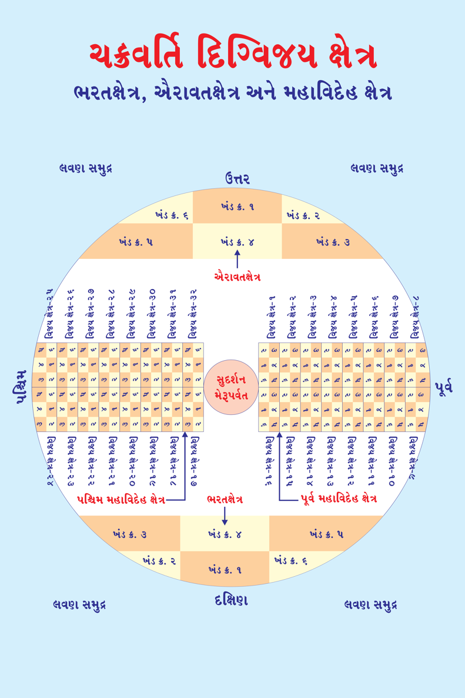
ચક્રવર્તી મહારાજા આ ખુશીના સમાચાર જાણી હર્ષવિભોર થઇ આયુધશાળા (શસ્ત્રભંડાર) તરફની દિશાએ ચક્રરત્નની સામે સાત-આઠ પગલા જાય છે, ડાબો ગોઠણ ઊંચો આખી, જમણો ગોઠણ જમીન પર સ્થાપી (નમોત્થુણં મુદ્રામાં) ચક્રરત્નને પ્રણામ કરે છે.
આયુધશાળાના રક્ષકને પોતાના મુગટ સિવાય બધાં જ આભૂષણો દાનમાં આપી દે છે તેમજ જીવન ઉપયોગી પુષ્કળ પ્રીતિદાન આપે છે. એટલે કે, આજીવન ચાલે તેટલું ધન આપી ભરણ-પોષણ રૂપ આજીવિકાની વ્યવસ્થા કરી તેનો સત્કાર અને સન્માન કરે છે.
ચક્રવર્તી મહારાજા સેવકોને આદેશ આપી રાજધાનીમાં ચારેબાજુ ગંધોદક (સુગંધીત દ્રવ્ય)નો છંટકાવ કરાવે, નગરી સાફ કરાવે, રાજમાર્ગમાં દર્શકો માટે બેઠકોની વ્યવસ્થા કરાવે, વિશાળ મંડપોની સજાવટ કરાવે, નગરીના મકાનોને છાણથી લિંપાવે, દિવાલોને રંગરોગાન, ચંદન કળશો મુકાવે વગેરે કાર્યોથી આખી રાજધાનીને સજાવી ધૂપ આદિથી સુગંધમય બનાવે છે.
ચક્રવર્તી મહારાજા સ્નાનગૃહમાં જઇ સ્નાન કરી દિવ્ય વસ્ત્રો અને આભૂષણોથી સજ્જ થઇ સેવકો દ્વારા ચામર ઢળાય તેમજ અંગરક્ષકો, વિશાળ સંખ્યામાં દાસીઓ, સર્વ પ્રકારના વાજિંત્ર-વાદકોની સાથે આયુધશાળામાં જાય છે.
ચક્રરત્નને પ્રણામ કરી હાથમાં મોરપીંછથી પ્રમાર્જન કરી દિવ્ય જલધારાથી પ્રક્ષાલન (પક્ષાલ) કરે છે. ગોશીર્ષ ચંદનથી લેપ કરે છે. સુગંધીત વિવિધ દ્રવ્યો અને પાંચ વર્ણના અને સુગંધિત પુષ્પોથી પૂજા કરે છે. અક્ષતથી અષ્ટમંગલનું આલેખન (ચોખાના અષ્ટમંગલની આકૃતિઓ બનાવવી) કરે છે.
128
Page 243
જૈનમ્ જયતિ શાસનમ્
ચક્રરત્નની વિધિપૂર્વક પૂજા કરી રાજસભામાં પધારી નગરજનો સમક્ષ ઘોષણા કરાવે છે કે, ‘જકાતનાકાના રાજ્યકર, પશુધનના રાજ્યકર, ખેતીની મહેસુલ (ટેક્ષ) માફ કરે છે. પ્રજાજનોના ઘરોમાં રાજ કર્મચારીનો પ્રવેશ નહીં (કર રુપે કોઇપણ વસ્તુઓ માપે કે ગણે નહીં), અપરાધીઓને સજામાંથી મુક્તિ, રાજદેણા માફ, દંડ માફ વગેરે ખુશીઓ પ્રજાજનોને ભેટ સ્વરુપે ચક્રવર્તી મહારાજા આપે છે.
રાજધાનીમાં અષ્ટાન્હિકા મહોત્સવ રુપે નગરજનો માટે વાદ્ય, વાજિંત્ર, નાટક વગેરે સતત મનોરંજન પણ થાય છે. અષ્ટાન્હિકા મહોત્સવમાં 18 શ્રેણી (18 આલમ, જાત) અને પ્રશ્રેણી (પ્રજાતિ, પેટાભાગ) (કુંભાર, ગામના મુખી, સોની, રસોઇયા, ગાયક, વાણંદ, માળી, કથાકાર, પાન વિક્રેતા, મોચી, તેલી, ગાંધી, રંગનારા, કંસારા, દરજી, ભરવાડ, ભિલ્લ, માછીમાર) આ 18 પ્રકારમાં સર્વે પ્રજાજનોનો સમાવેશ થઇ જાય છે.
ચક્રવર્તી પૂર્વભવના પ્રબળ પુણ્યના પ્રભાવે 14 રત્નોના સ્વામી બને છે. તેની પ્રાપ્તિ ક્રમશઃ થાય છે. તેમાં સહુથી પ્રથમ આયુધશાળામાં ચક્રરત્નની ઉત્પત્તિ થાય છે. ચક્રરત્ન 1000 દેવ અધિષ્ઠિત હોય છે. તેની જ સહાયતાથી ચક્રવર્તી છ ખંડનો રાજા બને છે.
ચક્રરત્ન રત્નમય અને સ્વચ્છ જ હોય છે. તેમ છતાં તેનું પ્રમાર્જન, પ્રક્ષાલન, પૂજાવિધિ વગેરે પ્રક્રિયા દ્વારા ચક્રરત્ન પ્રત્યે અને તેના અધિષ્ઠિત દેવ પ્રત્યે ચક્રવર્તીના આદરભાવના દર્શન થાય છે.
129
Page 244
જૈન વિજ્ઞાન
જેમ અરિહંત પરમાત્મા કેવળજ્ઞાનની પ્રાપ્તિ થાય પછી દેવો દ્વારા નિર્મિત સમવસરણમાં પ્રથમ દેશના આપે છે, ચૈત્યવૃક્ષની નીચે મનુષ્યો અને દેવી- દેવતાઓને ધર્મદેશના આપી તીર્થ પ્રવર્તાવે છે. હવેથી તેઓ તીર્થંકર કહેવાય છે. કેમકે, પૂર્વ ભવમાં ‘સવિ જીવ કરું શાસન રસી’ ની શુભ ભાવના અને વીસ સ્થાનક તપની ભવ્ય આરાધના કારણે તીર્થંકર નામ કર્મનો ઉદય થાય છે. તીર્થંકર નામ કર્મના પ્રભાવે કેવળજ્ઞાન પ્રગટ થતાં જ તીર્થમાં દેશના આપે છે.
એ જ પ્રમાણે ચક્રવર્તી નામકર્મના ઉદયે જ ચક્રવર્તી મહારાજના શસ્ત્રના ભંડારમાં (આયુધશાળામાં) જ ચક્રરત્નની ઉત્પત્તિ થાય છે. પરંતું, ચક્રરત્નની ઉત્પત્તિથી જ ચક્રવર્તી નથી બનાતું! તેના માટે છ ખંડમાં ચક્રરત્નની સહાયતાથી દરેક ખંડમાં યુદ્ધ કરી અથવા વિવિધ દેશોના રાજાઓની શરણાગતિથી વિજેતા બનવાનું હોય છે. દરેક રાજાઓ ચક્રવર્તીને આધીન થઇ, જ્યારે છ ખંડ વિજેતા બને ત્યારે જ તે ચક્રવર્તી કહેવાય છે.
દિગ્વિજય પ્રયાણઃ
અષ્ટાન્હિકા મહોત્સવ સંપન્ન થતાં જ દિવ્ય ચક્રરત્ન આયુધશાળા (શસ્ત્રાગાર) માંથી બહાર નીકળી આકાશ માર્ગે ચાલે છે. ચક્રરત્ન 1,000 યક્ષોથી અધિષ્ઠિત હોય છે. દિવ્ય વાજિંત્રોના ધ્વનિથી અને નિર્ઘોષથી આકાશને શબ્દાયમાન કરતું ચક્રરત્ન, ચક્રવર્તી મહારાજાની રાજધાનીની મધ્યેથી નીકળે છે.
130
Page 245
ચક્રવર્તિ દિગ્વિજય ક્ષેત્ર ભરતક્ષેત્ર અને તેના 6 ખંડો
જૈન વિજ્ઞાન
ચક્રવર્તી મહારાજાની પોતાની વિશાળ સેના હોય છે. તેનો વિશ્રામ માટેનો પડાવ 12 યોજન લાંબો અને 9 યોજન પહોળો હોય છે. ચતુરંગિણી (ચાર પ્રકારની) સેનામાં શ્રેષ્ઠ કોટિના ઘોડા, હાથી, રથ અને શ્રેષ્ઠ યોદ્ધાઓ સામેલ હોય છે. છ ખંડ વિજેતા બનવા માટે બહુ જ લાંબો સમય (ઘણા જ વર્ષો) લાગવાના કારણે વિશિષ્ટ ધન-ધાન્યના ભંડારો પણ સાથે જ હોય છે.
દિગ્વિજય માટે પ્રયાણઃ
ચક્રરત્ન, ચક્રવર્તી મહારાજાની રાજધાનીથી માગધતીર્થ તરફ પ્રયાણ કરે છે. વચ્ચે આવતા હજારો ગામ, ખાણો, નગર, ખેટ, કર્બટ, મડંબ, દ્રોણમુખ, પટ્ટન, આશ્રમ તથા પ્રજાજનયુક્ત રાજા-મહારાજાઓને પરાજિત કરી ઉત્કૃષ્ટ (શ્રેષ્ઠ) રત્નો રાજા-મહારાજાઓ પાસેથી ભેટ સ્વરૂપે સ્વીકારે છે તેમજ પોતાના આધીન કરે છે.
દિવ્ય ચક્રરત્ન રોજ 1-1 યોજન આકાશ માર્ગે આગળ વધે છે અને જ્યાં સ્થિર થાય ત્યાં જ ચક્રવર્તી મહારાજા અને તેની સેના વિશ્રામ માટે પડાવ નાંખે. અહીં, એક યોજન પ્રમાણ એટલે ચક્રરત્નના પ્રયાણથી દિવસના અંતે સ્થિરતા કરે તે મુજબ એક યોજન ગણવાનું હોય છે. જ્યાં-જ્યાં ચક્રરત્ન જે દિશાએ આગળ વધે, તે દિશામાં જ ચક્રવર્તી મહારાજા અને તેમની સેના ચક્રરત્નને અનુસરે.
વિશ્રામ સ્થળે વર્દ્ધકિરત્ન (શ્રેષ્ઠ શિલ્પકાર) ચક્રવર્તી મહારાજા માટે વિશેષ કોટિનું આવાસ સ્થાન બનાવે છે. સૈનિકો માટે શ્રેષ્ઠ નગરની જેમ નિવાસરૂપ છાવણી બનાવે છે.
132
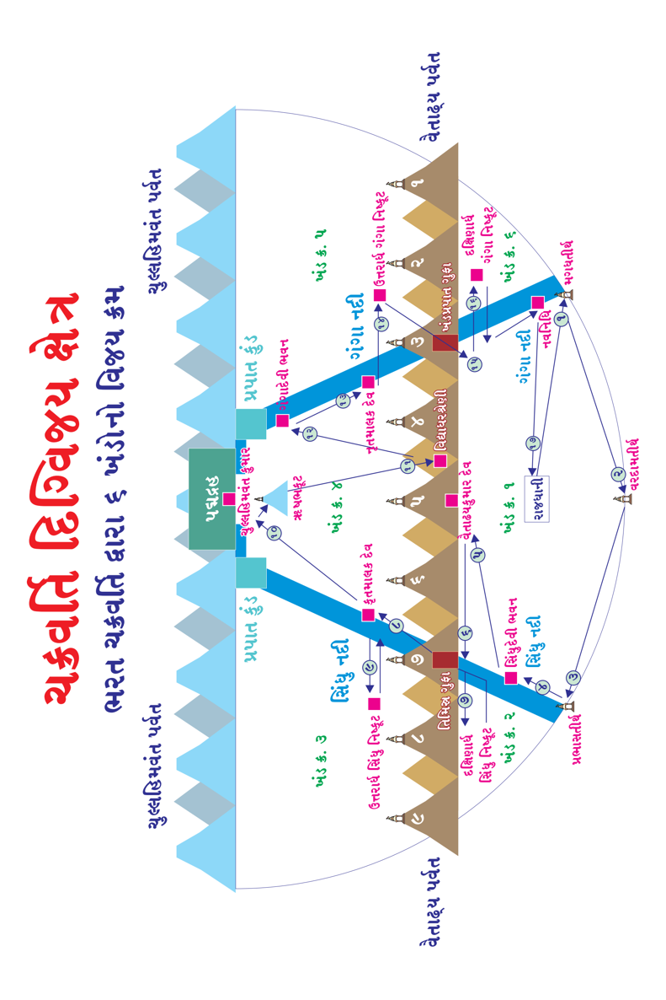
જ્યાં-જ્યાં તીર્થ કે કોઇ ક્ષેત્ર, રાજ્ય, નગર દેવોને આધીન હોય કે તે ક્ષેત્ર ઉપર અધિષ્ઠાયક દેવોની કૃપા સતત વરસતી હોય ત્યાં દેવોની કૃપા મેળવવા ચક્રવર્તી મહારાજા પૌષધવ્રત અઠ્ઠમ તપ સાથે અવશ્ય કરે! જેથી તે ક્ષેત્રના દેવ તેમને આધીન થાય અને યુદ્ધમાં વિજય સરળતાથી થાય! તે જ ઉદ્દેશ્યથી ત્યાંના અધિષ્ઠાયક દેવની અસીમ કૃપા મેળવવા પૌષધશાળાનું નિર્માણ વર્દ્ધકિરત્નની પાસેથી કરાવે છે.
ચક્રવર્તી મહારાજા પૌષધશાળાનું પ્રમાર્જન કરે, અઢી હાથ પ્રમાણ દર્ભ (ડાભ, એક જાતનું ઘાસ)નું આસન પાથરી તેના ઉપર બેસે અને જે ક્ષેત્રમાં યુદ્ધ વિજય મેળવવાનું હોય તે ક્ષેત્રના અધિષ્ઠાયક દેવને ઉદ્દેશીને અઠ્ઠમતપ (ત્રણ ઉપવાસ) ધારણ કરે. બ્રહ્મચારી બનીને, મણિરત્નો, સુવર્ણના આભૂષણોનો ત્યાગ કરે. શરીર ઉપર ચંદન આદિ સુગંધીત લેપોને દૂર કરે, શસ્ત્ર, મુશળ (સાંબેલુ) વગેરે સાવદ્ય યોગ (હિંસાજનક પ્રવૃતિઓ)નો ત્યાગ કરીને દર્ભાસન (એક જાતના ઘાસનું આસન) ઉપર બેસી તે ક્ષેત્રના અધિષ્ઠાયક દેવને એકચિત્ત બની, સર્વ વ્યાપાર (પ્રવૃત્તિઓ) છોડી, એકલા જ સૈન્ય આદિની સહાયતા વગર આત્મબળપૂર્વક અઠ્ઠમતપમાં જાગૃત રહે છે. પરંતું, જે ચક્રવર્તી મહારાજાને તીર્થંકર નામકર્મનો પણ સાથે ઉદય હોય તો તેમને અઠ્ઠમ તપની સાધના કરવી નથી પડતી. તેમને સંકલ્પ માત્રથી દેવો તેમની આજ્ઞા સ્વીકારી લે છે! દા. ત. શ્રી શાંતિનાથ ભગવાન.
અઠ્ઠમતપની પૂર્ણાહુતિએ પૌષધશાળામાંથી બહાર નીકળી પછી જ યુદ્ધ વિજય માટે સેનાને તૈયાર રહેવાનો આદેશ આપે છે, તે પહેલાં યુદ્ધ કરતાં નથી. મહાન પુરુષોની એક વિશેષતા હોય છે.
134
Page 249
જૈનમ્ જયતિ શાસનમ્
ચક્રવર્તી મહારાજાએ જીતેલા છ ખંડમાં મુખ્ય શાશ્વત મહા પ્રદેશો :
માગધતીર્થ :
દક્ષિણ ભરતક્ષેત્રના પૂર્વ કિનારે ગંગા મહાનદી જ્યાં સમુદ્રને મળે છે, ત્યાં માગધતીર્થ છે. માગધતીર્થના અધિપતિ નાગકુમાર જાતિના માગધકુમાર દેવ છે.
વરદામતીર્થઃ
વરદામ તીર્થ ભરતક્ષેત્રના દક્ષિણ ક્ષેત્રના લવણસમુદ્રના કિનારે, વિનીતા નગરીની દક્ષિણમાં બરાબર સીધી રેખાએ અને જંબુદ્વીપની જગતીની દક્ષિણ દિશાના વૈજયંત દ્વારની સીધી રેખાએ વરદામ તીર્થ છે. વરદામતીર્થના અધિપતિ વરદામતીર્થકુમાર દેવ હોય છે.
પ્રભાસતીર્થઃ
દક્ષિણ ભરતક્ષેત્રના પશ્ચિમ દિશામાં આવેલ લવણ સમુદ્રના કિનારે, જ્યાં સિંધુ મહાનદી લવણ સમુદ્રને મળે છે, તે સંગમ સ્થાન ઉપર છે. પ્રભાસતીર્થના અધિપતિ પ્રભાસતીર્થકુમાર દેવ છે.
સિંધુદેવી :
મહા ઋદ્ધિવાળા દેવ-દેવીઓના ભવનો અનેક સ્થાને હોય છે. જેમાં આ ભવન સિંધુ મહાનદી, વૈતાઢ્ય પર્વતની નીચેથી નીકળી દક્ષિણ ભરતક્ષેત્રમાં ઉત્તરથી દક્ષિણ દિશામાં વિનીતાનગરીની સમાંતરે વહેતી-વહેતી પશ્ચિમ દિશામાં વળાંક લે છે, તે પશ્ચિમી વળાંકે સિંધુદેવીનું સ્થાન આવેલ છે. તે સ્થાનના અધિપતિ સિંધુદેવી છે.
135
Page 250
ચક્રવર્તિ દિગ્વિજય ક્ષેત્ર વૈતાઢ્ય પર્વત પહોળાઇ : ઉત્તર દિશા અને દક્ષિણ દિશા
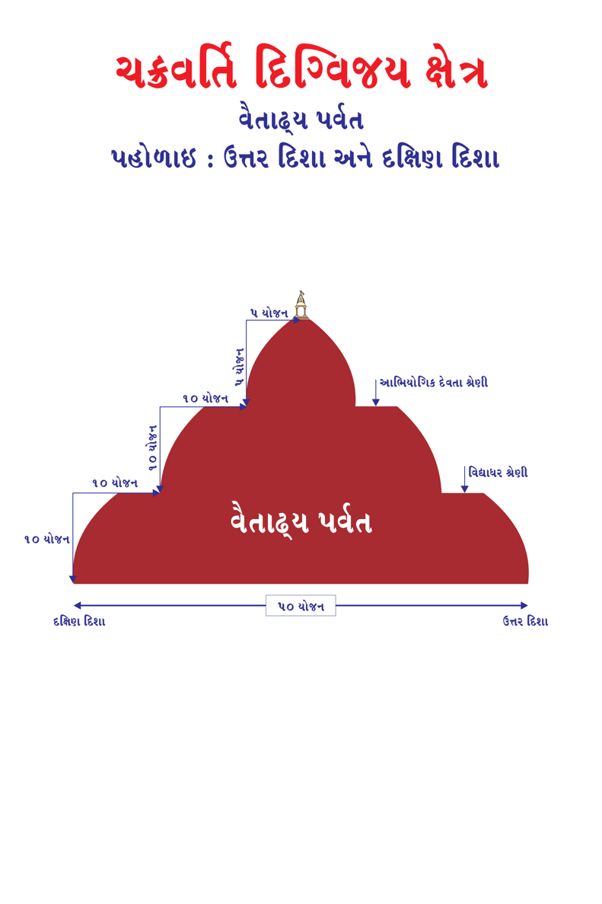
ચક્રવર્તિ દિગ્વિજય ક્ષેત્ર વૈતાઢ્ય પર્વત લંબાઇ : પૂર્વ દિશા અને પશ્ચિમ દિશા
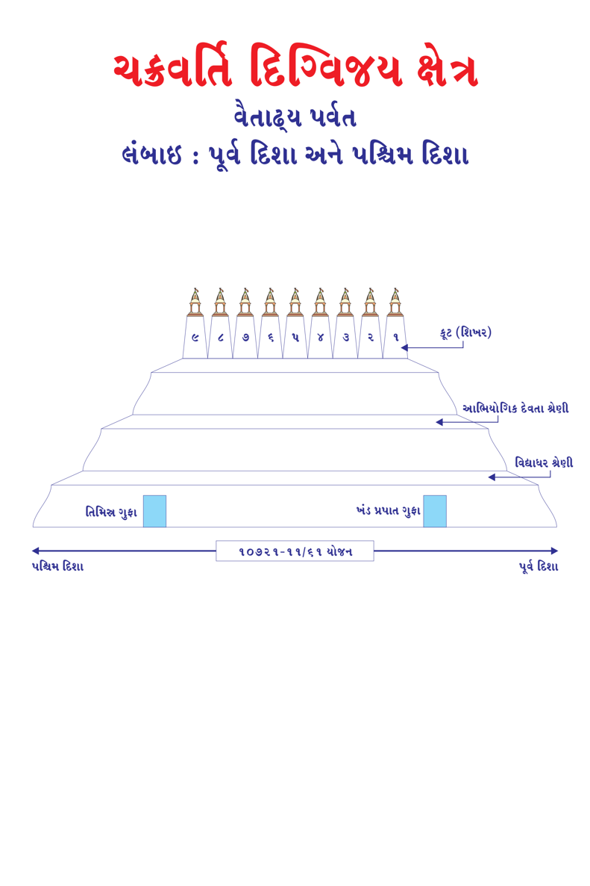Page 252
જૈન વિજ્ઞાન
ચક્રવર્તી મહારાજાએ જીતેલા છ ખંડના મુખ્ય શાશ્વત મહા પ્રદેશો :
કોઇપણ ક્ષેત્ર કે વિજય વૈતાઢ્ય પર્વત અને બે મહાનદી ગંગા અને સિંધુના કારણે તે ક્ષેત્ર 6 ખંડમાં વિભાજિત થાય છે. વૈતાઢ્ય પર્વતના કારણે બે વિભાગ થાય છે ઉત્તર અને દક્ષિણ, તે જ પ્રમાણે ઉત્તર દિશાથી વહેતી-વહેતી મહાનદી દક્ષિણમાં લવણ સમુદ્રને મળે છે. પૂર્વ દિશાએ ઉત્તરથી દક્ષિણ તરફ ગંગા મહાનદી અને પશ્ચિમમાં સિંધુ મહાનદીના કારણે પૂર્વ ખંડ - મધ્ય ખંડ - પશ્ચિમ ખંડમાં વિભાજિત થાય છે તેમજ વૈતાઢ્ય પર્વતના કારણે ઉત્તરમાં અને દક્ષિણમાં બે પ્રકારે વિભાજિત થાય છે.
વૈતાઢ્ય :
વૈતાઢ્ય પર્વતના કુલ 9 કૂટ (શિખર) છે. તેમાનાં પાંચમા કૂટનું નામ વૈતાઢ્ય કૂટ છે. સિંધુદેવીના ભવનથી ઇશાન (ઉત્તર અને પૂર્વની વચ્ચે) ખૂણે આવેલ છે. વૈતાઢ્ય પર્વતના અધિપતિ વૈતાઢ્યગિરિકુમાર દેવ છે.
કૃતમાલ દેવઃ
વૈતાઢ્ય પર્વતના કુલ 9 કૂટોમાંથી 7મું તિમિસ્ર ગુફા કૂટ છે. તેમાં કૃતમાલ
દેવનું સ્થાન છે. આ જ તિમિસ્ર ગુફાથી દક્ષિણ ક્ષેત્રમાંથી ઉત્તર ક્ષેત્રમાં જઇ શકાય છે.
દક્ષિણ સિંધુ નિષ્કૂટઃ
નિષ્કૂટ એટલે જ્યાં શિખરો યુક્ત પર્વતો નથી તેવી સમાંતર અને અસમાંતર ભૂમિ ક્ષેત્ર. સિંધુ મહાનદીની પશ્ચિમ દિશાએ, પશ્ચિમ સમુદ્ર અને ઉત્તર દિશામાં વૈતાઢ્ય પર્વતથી ઘેરાયેલ ક્ષેત્ર છે (ખંડ નંબર-2).
138
Page 253
જૈનમ્ જયતિ શાસનમ્
ચક્રવર્તી મહારાજાએ જીતેલા છ ખંડના મુખ્ય શાશ્વત મહા પ્રદેશો :
તિમિસ્ર ગુફાઃ
તિમિસ્ર ગુફા વૈતાઢ્ય પર્વતના કુલ 9 કૂટો (શિખરો) છે. તેમાંથી 7માં નંબરની કૂટની નીચે ઉત્તર-દક્ષિણ 50 યોજન લાંબી અને પૂર્વ-પશ્ચિમ 12 યોજન પહોળી, 8 યોજન ઊંચી છે. ઉત્તર અને દક્ષિણ બંને બાજુએ દ્વાર હોય છે. તે હંમેશાં બંધ હોય છે. તેના દ્વાર 8 યોજન ઊંચા, 4 યોજન પહોળા હોય છે. પ્રત્યેક દ્વારને 2- 2 યોજન પહોળા 2-કમાડ હોય છે. તે દ્વારની બંને બાજુએ 4 યોજન લાંબા, 4 યોજન પહોળા ટોડા (બારણાંના ટેકા રૂપે એક-એક તોડક) હોય છે. દ્વાર ખુલ્લે ત્યારે ટોડાના ટેકાથી ખુલ્લા રહે છે.
તિમિસ્ર ગુફાનું દ્વારને વિધિવત્ પૂજન અને વંદન બાદ દંડરત્ન દ્વારા ચક્રવર્તી મહારાજાના સેનાપતિ, દરવાજા ઉપર પ્રહાર કરવા સાત-આઠ પગલા પાછળ ખસીને વેગપૂર્વક તિમિસ્ર ગુફાના દ્વારને ત્રણ વાર દંડરત્નથી પ્રહાર કરતાં જ દ્વાર ખૂલી જાય છે. ચક્રવર્તી મહારાજા મણિરત્નને ગજરાજના જમણા કુંભસ્થળ (મસ્તકની જમણી બાજુ) સ્થાપિત કરે છે. મણિરત્નથી અંધકારમય ગુફામાં ચોમેરથી પ્રકાશ ફેલાય છે. તિમિસ્ર ગુફામાં સૂર્ય અને ચંદ્રનો પ્રકાશ પણ નથી આવતો તેવા ગાઢ અંધકારમાં કાકણિરત્નથી અંધકાર દૂર થાય છે. કાકણિરત્નના સહાયતાથી ચક્રવર્તી મહારાજાની સેના તિમિસ્ર ગુફા પાર કરે છે.
139
Page 254
ચક્રવર્તિ દિગ્વિજય ક્ષેત્ર તિમિસ્રગુફા - ખંડપ્રપાત ગુફા 49 પ્રકાશ મંડલો
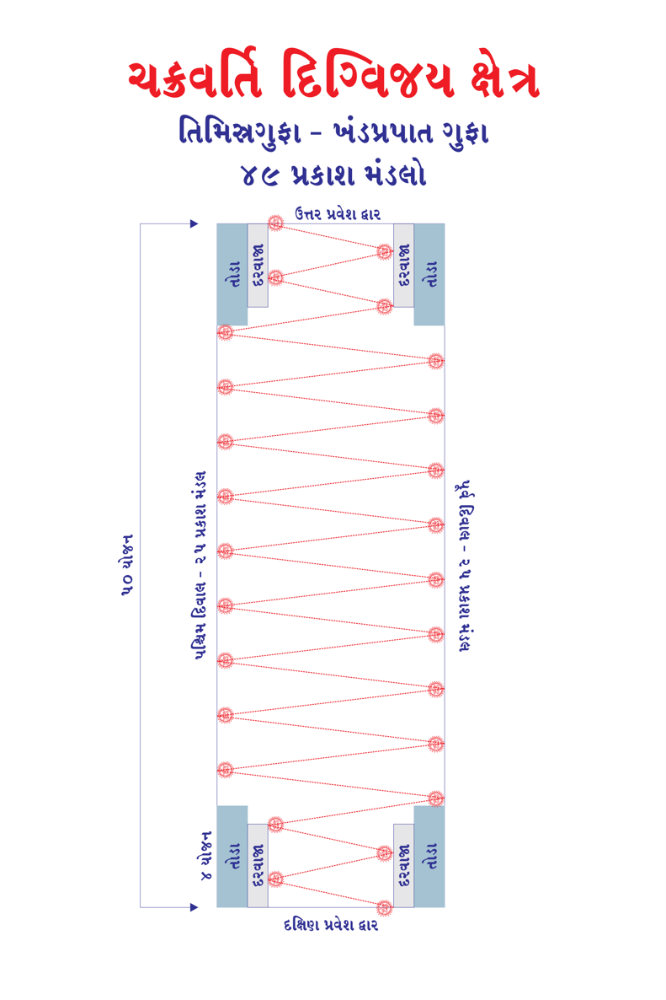
તિમિસ્રગુફા - ખંડપ્રપાત ગુફા ઉન્મગ્નજલા - નિમગ્નજલા નદી ઉત્તર પ્રવેશ દ્વાર
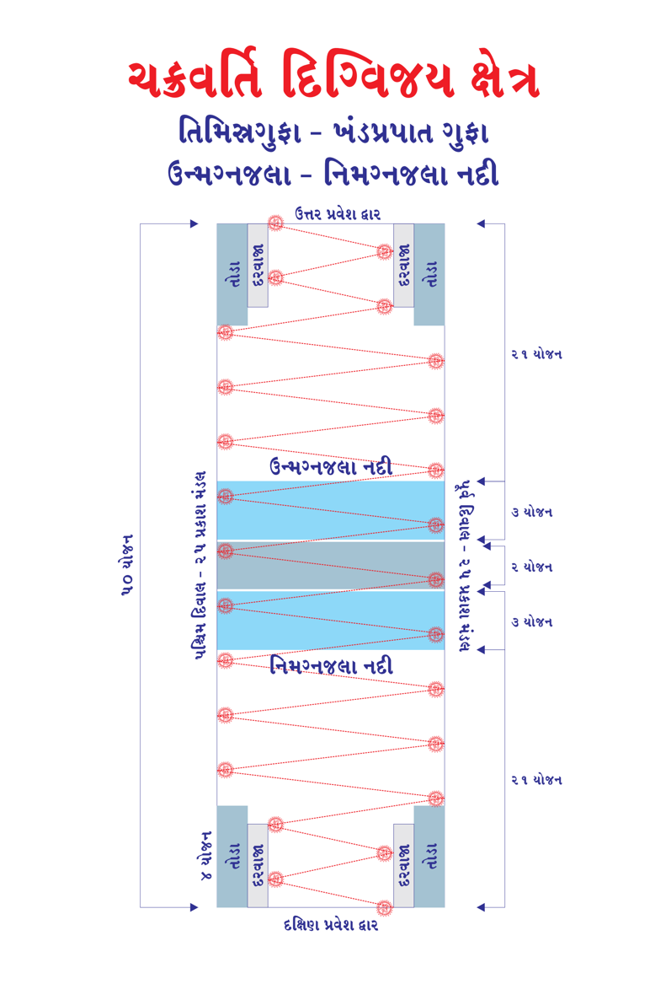
ચક્રવર્તી મહારાજાએ જીતેલા છ ખંડના મુખ્ય શાશ્વત મહા પ્રદેશો :
તિમિસ્ર ગુફાઃ
કાકણિરત્ન ગુફાની પૂર્વ-પશ્ચિમ દિવાલ પર, એક-એક યોજનના અંતરે, 500 ધનુષ્યની પહોળાઇ અને ઉત્તર-દક્ષિણમાં 1-1 યોજન ક્ષેત્રને પ્રકાશિત કરી 49 મંડલથી ગુફા દિવસ જેવી બની જાય છે. તિમિસ્ર ગુફામાં બરાબર વચ્ચે ઉન્મગ્નજલા અને નિમગ્નજલા નામની બે મહાનદી વહે છે જે સિંધુ મહાનદીમાં ભળી જાય છે. ઉન્મગ્નજલા નદીમાં ઘાસ, પાંદડાં, લાકડાં, પથ્થરના ટુકડા, ઘોડા, હાથી, રથ, યોદ્ધા કે મનુષ્ય, કોઇપણ પદાર્થ નાંખવામાં આવે તો તે પાણીમાં તરતાં કિનારે પહોંચી જાય છે. તેનાથી વિપરીત નિમગ્નજલા મહાનદીમાં ડૂબી જાય છે. વર્દ્ધકિરત્નની સહાયતાથી પૂલ બનાવી સેના બન્ને મહાનદી પાર કરે છે. તિમિસ્ર ગુફાનો ઉત્તરનો દરવાજો પોતાની મેળે જ ખૂલે છે.
કિરાત ક્ષેત્રઃ
આપાત કિરાતોનો દેશ, તિમિસ્ર ગુફાની ઉત્તરમાં આવેલ છે.
ઉત્તરાર્ધ સિંધુ નિષ્કૂટઃ
ઉત્તરાર્ધ સિંધુ નિષ્કૂટ પ્રદેશની પૂર્વમાં સિંધુ મહાનદી, દક્ષિણમાં વૈતાઢ્ય પર્વત, પશ્ચિમમાં લવણ સમુદ્ર અને ઉત્તરમાં હિમવંત પર્વત આવેલ છે.
ચુલ્લહિમવંતઃ
ચુલ્લહિમવંત પર્વતની મધ્ય ભાગની તળેટીમાં સેનાનો પડાવ નાંખે છે. તેના અધિપતિ ચુલ્લહિમવંતગિરિકુમાર દેવ છે.
142
Page 257
જૈનમ્ જયતિ શાસનમ્
ચક્રવર્તી મહારાજાએ જીતેલા છ ખંડના મુખ્ય શાશ્વત મહા પ્રદેશો :
ઋષભકૂટ :
ઋષભકૂટ ઉપર ચક્રવર્તી મહારાજા પોતાનું નામ કાકણિરત્નથી અંકિત કરે છે. હું ચક્રવર્તી મહારાજ (પોતાનું નામ) થયો છું. હું ક્ષેત્ર (નામ : ભરત, ઐરાવત કે મહાવિદેહ (વિજયનું નામ)નો અધિપતિ છું. મારો કોઇ પ્રતિશત્રુ નથી. મેં આ ક્ષેત્ર (નામ) જીતી લીધું છે. ઋષભકૂટ ઉપર માત્ર ચક્રવર્તી મહારાજ પોતાનું નામાંકન ચક્રવર્તી તરીકે કરે છે. અત્યાર સુધીમાં ખંડ નંબર 1, 2, 3 અને 4 ઉપર વિજય મેળવ્યો છે પરંતું, હજી બીજા બે ખંડો ઉપર વિજય મેળવવાના બાકી હોય છે.
વિદ્યાધર શ્રેણીઃ
વૈતાઢ્ય પર્વત ઉપર વિદ્યાધરોની શ્રેણી આવેલ છે. ચક્રવર્તી મહારાજા વિદ્યાધરો સાથે યુદ્ધમાં વિજય મેળવતાં 14 મહામૂલ્ય રત્નોમાંના એક રત્ન તેમને સ્ત્રીરત્ન ની ભેટ આપવામાં આવે છે.
ગંગાદેવીઃ
ગંગાનદી ચુલ્લહિમવંત પર્વતમાંથી નીકળી પર્વત ઉપરથી વહેતી-વહેતી પર્વતથી ધોધરૂપે નીચે ઉત્તર ક્ષેત્રમાં જ્યાં પડે છે, ત્યાં ગંગાપ્રપાત દ્રહ (કુંડ) છે અને તે ગંગાપ્રપાત કુંડમાં ગંગાદ્વીપ ઉપર ગંગાદેવીનું ભવન છે.
નૃતમાલક દેવઃ
વૈતાઢ્ય પર્વતના ત્રીજા કૂટની સમીપે, ગંગા મહાનદીના પશ્ચિમ કિનારે, દક્ષિણ દિશામાં ખંડપ્રપાત ગુફા આવેલ છે.
જિનાજ્ઞા વિરાધના થઇ હોય તો ત્રિવિધે ત્રિવિધે કરી મિચ્છામિ દુક્કડમ્! લિ. જીજ્ઞેશ ચંદ્રકાન્ત હંસરાજ લોડાયા (વારાપધર-ડોંબિવલી)
143
Page 258
જે દેવનિર્મિત સમવસરણે બેસી દેતા દેશના, વાણી અમીય સમાણી સુણતા, તૃપ્તિ કદીએ થાય ના, ચોત્રીશ અતિશય શોભતા, પાંત્રીસ ગુણ વાણીતણા, અરિહંતના શુભ ચરણમાં, કરું ભાવથી હું વંદના... જે રજત સોનાને અનુપમ, રત્નના ત્રણ ગઢ મહીં, સુવર્ણના નવપદ્મમાં, પદકમળને સ્થાપન કરી; ચારે દિશા મુખ ચાર ચાર, સિંહાસન જે શોભતા, અરિહંતના શુભ ચરણમાં, કરું ભાવથી હું વંદના...
।। ચરમ તીર્થાધિપતિ શ્રી મહાવીર સ્વામીને નમઃ ।। શ્રી ।। ૐ ર્હ્રીં ણમો નાણસ્સ ।।
ગૌતમ સ્વામીને નમઃ ।।
।। અનંત લબ્ધિનિધાન
જૈન વિજ્ઞાન
જૈન વિજ્ઞાન
ભાગ-3
જૈન વિજ્ઞાન
પ્રકાશકની કલમે...
જય જિનેન્દ્ર! અત્યંત હર્ષની લાગણીઓ સાથે જૈનમ્ જયતિ શાસનમ્ વોટસએપ ગ્રુપમાં દૈનિક ધોરણે પ્રકાશિત થયેલા જૈન વિજ્ઞાન લેખ નં. 201 થી 300 સુધીના લેખના સંગ્રહ પુસ્તક સ્વરૂપે જૈન વિજ્ઞાન : ભાગ-3 રજુ કરી રહ્યા છીએ. જૈનમ્ જયતિ શાસનમ્ જૈનોના વિવિધ સંપ્રદાયને એક છત્ર હેઠળ સમાવેશ કરી, કોઇની ભાવના અને શ્રદ્ધાને ઠેસ ન પહોંચે તેનું વિશેષ ધ્યાન રાખીએ છીએ.
વર્તમાનમાં કોરોના પેન્ડેમિકે સમગ્ર વિશ્વની પ્રગતિને બાંધી રાખી છે. કોરોના એક સુક્ષ્મ વિષાણુ છે. કોઇએ ઉત્પન્ન નથી કર્યો પરંતું, 84 લાખ જીવાયોનીમાંનો જ એક જીવ છે. વિષાણુંનો ફેલાવો એ મનુષ્યની વિકૃત્ત બુદ્ધિનું જ પરિણામ છે. આવી ઘટના વિશ્વમાં પ્રથમવાર નથી બની, અગાઉ પણ આવી મહામારી આવી ચૂકી છે. તે વખતના મહાન, વિદ્વાન આચાર્ય ભગવંતો પ્રભુ પ્રત્યેની વિશિષ્ટ ભક્તિથી તેને કાબુમાં લીધો હતો, તેમણે જિનેશ્વર દેવને કેન્દ્રમાં રાખી તેમનું સ્મરણ દિવ્ય મંત્ર શક્તિ, સાધના અને જગત કલ્યાણની શુભ ભાવનાના પરિણામે સમગ્ર વિશ્વ ઉપર કલ્યાણ કર્યું. જેનો સંપૂર્ણ શ્રેય જિનેશ્વર દેવને જાય. જેમના નામ સ્મરણ માત્રથી દુઃખો ક્ષય પામે છે, તો તેમના દર્શનનો પ્રભાવ કેટકેટલો! શુભ અને અશુભ કર્મો ચક્રવૃદ્ધિ વ્યાજ સમાન છે. તે જીવને ઉદયમાં આવતા તેના તેવા જ વિપાકો (ફળો) તેને ચાખવા જ પડે છે. આંબાનો છોડ વાવીએ તો અગણિત આંબા અને કાંટાળા વૃક્ષો વાવીએ તો અગણિત કાંટા જ મળે.
વોટસએપ મારફતે જૈન દર્શનના લેખ દૈનિક ધોરણે પ્રકાશિત કરવામાં આવે છે. જીવ હિંસાનું કારણ સમજો તેમજ તેના કારણે થતી ભવભ્રમણા. દરેક જીવ સુખને ઇચ્છે છે. દરેક મનુષ્ય જીવ પોતાના આત્માને ઉન્નતિના માર્ગે સ્થાપી જીવને મળેલ મનુષ્ય જન્મ સાર્થક કરે. જૈન વિજ્ઞાનના વિવિધ લેખો સમગ્ર જીવ અને વિવિધ તત્ત્વોને સુક્ષ્મતાથી ઓળખવામાં મદદ જરૂર કરશે, સમજણ વગરનું જ્ઞાન નકામું. જ્ઞાનને વ્યવસ્થિત રીતે સમજી કરીને અમલમાં લાવીએ. જૈનમ્ જયતિ શાસનમ્ વોટસએપ ગ્રુપમાં સારી સંખ્યામાં લોકો દૈનિક ધોરણે જોડાતા રહે છે. આજે જૈનમ્ જયતિ શાસનમ્ ગ્રુપ એક વિશાળ વટવૃક્ષ બની ચૂક્યું છે. જેમણે પણ વોટસએપ ગ્રુપમાં જોડાવું હોય તેઓ વોટસએપ ગ્રુપમાં અમને વોટસએપ નં. 8898336677 ઉપર મેસેજ કરશો, અમે આપને જોઇન ગ્રુપ લિન્ક મોકલાવીશું. ફરી એકવાર આપને હૃદયપૂર્વક ધન્યવાદ!
લિ. જૈનમ્ જયતિ શાસનમ્ ગ્રુપ - સંસ્થાપક
1
Page 261
જૈનમ્ જયતિ શાસનમ્
પ્રસ્તાવના : સંસાર અટવી
ૐ ર્હ્રીં નમો નાણસ્સ, જ્ઞાનને મારા નમસ્કાર હોજો. જ્ઞાન વગરનો જીવ નકામો! 84 લાખ જીવાયોનિએ જીવ પરિક્રમા કરી દુર્લભ એવા મનુષ્ય તરીકે જન્મ લે છે. મિથ્યાજ્ઞાન અને સમ્યક્જ્ઞાન તો તેને પૂર્વ ભવથી જ પ્રાપ્ત થયું છે. અહીં તેને મનુષ્ય જીવ તરીકે ઉન્નત્તિના માર્ગે એટલે કે મુક્તિના માર્ગે આગળ વધવાનું છે. પરંતું, મોહનીય કર્મ પણ તેના ઉદયમાં છે, અહીં જીવ સંસારમાં ભટકી જાય છે. માત્ર ભૌતિક સુખો અને પરિવારજનોની પ્રીતિ પ્રાપ્તિ મેળવવા માટે સતત મહેનત કરે છે. તે દલદલમાં ફસાઇ જાય છે, જેમ તે બહાર નીકળવાનો પ્રાયાસ કરે છે તેમ તે વધુને વધુ અંદર ફસાતો જાય છે. તેને કંઇ જ સમજાતું નથી કે તેણે પૂર્વે એવા ક્યા શુભ કર્મો કર્યા કે જેના પરિણામે તેને મહામૂલ્ય મનુષ્ય જન્મ પ્રાપ્ત થયો! વડીલો દ્વારા સંસ્કારનું સિંચન થાય છે, પરંતું, માત્ર ભૌતિક સુખોની પ્રાપ્તિ અને વ્યવહારની દુનિયામાં કામ આવે છે, આત્મ ઉન્નતિ તો નહીં જ! જીવ હળુકર્મી થવાના બદલે વધુને વધુ ભારે કર્મી બની સંસારમાં ભટકતો જ રહે છે.
તો જીવને શાશ્વત સુખ ક્યારે? અબજો-અબજો વર્ષોથી સુખ મેળવવા જીવ તરસે છે, પરંતું, તે તેને ક્યારેય પ્રાપ્ત થતું નથી. મોહનીય કર્મ પ્રતિ ક્ષણ મહત્વનો ભાગ ભજવે છે, દુઃખોની હારમાળા છે, જીવ સંસારના દુઃખોથી થાકે છે અને સંસારથી કટાળે છે કે તરત જ તેને ક્ષણિક સુખનો સ્વાદ જોવા મળે છે. થોડુંક સુખ મળતા ફરી સંસારની અટવી(ગીચ જંગલ)માં ભમવા લાગે છે. આજ સુખ-દુઃખના ક્રમો જળવાતા જ રહે છે. જીવ ક્યારેય સંસારથી મુક્ત થઇ શકતો નથી. સંસાર એ ચાકુ (છરી)ની અણિયારી ધાર પર લગાડવામાં આવેલ મીઠું મધ સમાન છે. જેવો જીવ મીઠા મધનો સ્વાદ ચાખવા જાય ત્યાં તો જીભને ચાકુની ધાર લાગવાથી લોહી વહેવા લાગે છે અને માત્ર પીડાદાયક વેદના જ પ્રાપ્ત થાય છે.
ચરમ તીર્થાધિપતિ, શ્રી મહાવીર સ્વામીની સમસ્ત જીવાયોની ઉપર કરૂણા હતી. સવિ જીવ કરૂ શાસન રસી અને રાગ-દ્વેષથી રહિત વીતરાગ ભાવનાના કારણે સમસ્ત જીવરાશી ઉપર મહાન ઉપકાર કર્યો છે. કેવળજ્ઞાનથી સમસ્ત જીવોને જાણ્યા છે અને જીવ શાશ્વત સુખને કેમ પ્રાપ્ત થાય? તેનો સમ્યક્ માર્ગ બતાવ્યો છે. હે ગોયમ! દરેક જીવને સુખ ગમે છે તેને તું જાણ. કોઇપણ જીવ દુઃખ નથી ઇચ્છતો.
2
Page 262
જૈન વિજ્ઞાન
અહિંસા જ મુક્તિનો માર્ગ છે, તેને તું જાણ. હિંસા સંસારરૂપી દાવાનળમાં ભવભ્રમણા કરાવે છે જીવ હિંસારૂપી કર્મથી ભારે બને છે પરિણામે જીવ નરક, તિર્યંચ, મનુષ્ય અને દેવ ગતિમાં ફરી-ફરીથી જન્મ ધારણ કરતો રહે છે.
જીવ પ્રતિક્ષણ મુખ્ય 18 પાપસ્થાનકોથી ઘેરાયેલો રહે છે, જ્યાં સુધી જીવના પ્રકાર અને જીવને થતી હિંસાનું કારણ ન જાણે ત્યાં સુધી તે સતત મન-વચન- કાયાથી હિંસાથી જોડાયેલો રહે છે, જે તેના ભવ ભ્રમણાનું મુખ્ય કારણ બને છે. સુખ અને દુઃખ જીવના સ્વકૃત કર્મોથી છે. બાકીના પરિબળો તો માત્ર નિમિત્ત છે. દા.ત. શ્રી મહાવીર સ્વામીના જીવે ત્રિપૃષ્ઠ વાસુદેવના ભવમાં દ્વારપાલના કાનમાં ધગધગતું રેડેલું સીસુથી દ્વારપાલનું તે જ ક્ષણે વેદનામય મૃત્યું થયું તે કર્મ શ્રી મહાવીર સ્વામી ભગવાનને 27માં ભવે દ્વારાપાલ ખેડૂત બની પ્રભુના કાનમાં શલ્ય (ખીલ્લા) ઠોકે છે ત્યારે પૂર્વે થયેલ અશુભ કર્મ ઉદયમાં આવે છે. પ્રભુને ઘણાં જ લાંબા સમય સુધી વેદના ભોગવવી પડે છે. અહીં ખેડૂત તો માત્ર કર્મ ભોગવવા માટે નિમિત્ત બન્યો છે, ખેડૂતને પોતાને જ ખબર નથી કે કાનમાં ખીલ્લા ઠોકવાની કુબુદ્ધિ આવી ક્યાંથી? જૈન વિજ્ઞાન મારફતે આપણે સમસ્ત જીવોને, તત્ત્વોને સમજીએ સાથે સંસાર પરિભ્રમણનું મુખ્ય કારણ... શ્રી મહાવીર સ્વામી ભગવાને સમવસરણમાં એટલું વિસ્તારપૂર્વક સુક્ષ્મ જ્ઞાન આપ્યું છે કે તેને વાંચતા-સાંભળતા-સમજતાં આયુષ્ય પૂર્ણ થઇ જાય છે. મનુષ્ય જીવ પોતાનું સંપૂર્ણ આયુષ્ય માત્ર ભૌતિક સુખો મેળવવા જ ખરચી નાંખે છે, જ્યારે સમજાય છે ત્યારે આયુષ્ય જ પૂર્ણ થઇ જાય છે. અવસર્પિણી કાળનો પાંચમો આરો દુષમ. મનુષ્ય જીવ વક્ર (વાંકી) બુદ્ધિમય હોય છે. દુઃખમાં સુખ અને સુખમાં દુઃખ દેખાય છે. શ્રી મહાવીર સ્વામી કહે છે સૌથી અઘરો છે સંસાર, સંસારનો ભાર વહન કરવો અતિ ભારે છે.
જૈનમ્ જયતિ શાસનમ્ ગ્રુપના સંસ્થાપક-સંચાલક શ્રી ચેતન લહેરચંદ નાગડા મારા કલ્યાણ મિત્ર છે. તેઓ મારા દરેક લેખોને જૈનમ્ જયતિ શાસનમ્ વોટસએપ ગ્રુપમાં પ્રકાશિત કરે છે તે બદલ હું હૃદયપૂર્વક આભાર માનું છું તેમજ તેમનો ઋણી છું. તેઓ આપની અને મારી વચ્ચે સેતુ બન્યા છે. જૈન વિજ્ઞાનના લેખ મારફતે કોઇની ભાવના-શ્રદ્ધાને ઠેસ પહોંચી હોય તો મને જરૂરથી ક્ષમા કરશોજી. જિનાજ્ઞા વિરાધના થઇ હોય તો ત્રિવિધે ત્રિવિધે કરી મિચ્છામિ દુક્કડમ્!
લિ. જીજ્ઞેશ ચંદ્રકાન્ત હંસરાજ લોડાયા (વારાપધર-ડોંબિવલી)
3
Page 263
જૈનમ્ જયતિ શાસનમ્
મનુષ્ય જીવ - 124 : ચક્રવર્તી-16 :
ચક્રવર્તી મહારાજાએ જીતેલા છ ખંડના મુખ્ય શાશ્વત મહા પ્રદેશો :
ઉત્તરાર્ધ ગંગા નિષ્કૂટ :
ઉત્તરાર્ધ ગંગા નિષ્કૂટ પ્રદેશ (ખંડ નંબર-5) ઉત્તરમાં હિમવંત પર્વત, પૂર્વમાં લવણ સમુદ્ર, પશ્ચિમમાં ગંગા નદી અને દક્ષિણમાં વૈતાઢ્ય પર્વત આવેલ છે.
ખંડપ્રપાત ગુફાઃ
સંપૂર્ણ વિધિવત તિમિસ્ર ગુફાની જેમ જ તેનું વર્ણન છે. તફાવત માત્ર ઉત્તરના ક્ષેત્રમાં જવા દક્ષિણ દ્વારથી પ્રવેશ થાય છે. અહીં દક્ષિણ ક્ષેત્રમાં પરત આવવા માટે ખંડપ્રપાત ગુફાના ઉત્તર દિશામાં આવેલ દ્વારનો ઉપયોગ થાય છે. વિશેષ ગુફાનું માપ, પ્રમાણ, અંધકાર વગેરે સમાન છે. બે મહાનદી ઉન્મગ્નજલા અને નિમગ્નજલા પાર કરવાની હોય છે. સેનાપતિ, મણિરત્ન, કાકણિરત્ન, વર્દ્ધકિરત્નની સહાયતાથી ચક્રવર્તી મહારાજા અને સમસ્ત સેના ગુફા પાર કરે છે.
નવ નિધિઓઃ
અપરિમિત રક્ત આદિ રત્નોવાળા, શાશ્વત, અવિનાશી, અવ્યય, દેવો દ્વારા અધિષ્ઠિત, વિવિધ આચાર, વિવિધ વસ્તુઓની ઉત્પત્તિ અને વિધિના દર્શક પુસ્તકરૂપ હોવાથી લોકપુષ્ટિ દાયક, લોક પ્રસિદ્ધ એવા નવનિધિઓ : 1) નૈસર્પનિધિ 2) પાંડુકનિધિ 3) પિંગલકનિધિ 4) સર્વરત્નનિધિ 5) મહાપદ્મનિધિ 6) કાલનિધિ 7) મહાકાલનિધિ 8) માણવકનિધિ અને 9) શંખનિધિ. તે નવનિધિઓ પોતપોતાના નામના દેવોથી અધિષ્ઠિત હોય છે.
4
Page 264
ચક્રવર્તિ દિગ્વિજય ક્ષેત્ર ભરતક્ષેત્ર, ઐરાવતક્ષેત્ર અને મહાવિદેહ ક્ષેત્ર
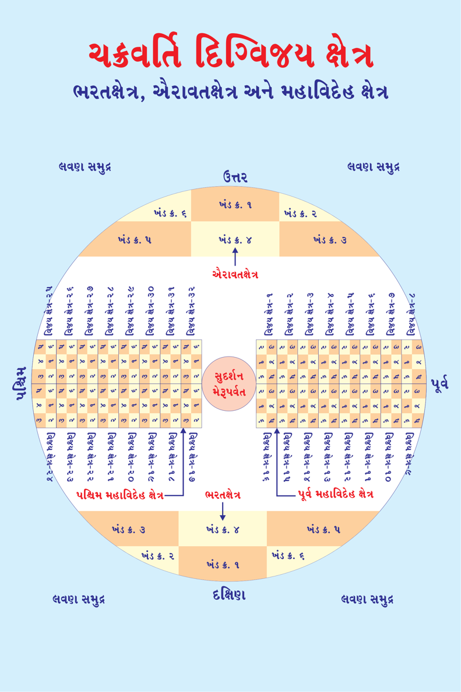
મનુષ્ય જીવ - 125 : ચક્રવર્તી-17 : ચક્રવર્તી મહારાજાએ જીતેલા છ ખંડના મુખ્ય શાશ્વત મહા પ્રદેશો : નવનિધિઃ
ગંગાનદી પૂર્વદિશામાં જ્યાં સમુદ્રને મળે છે, ત્યાં ગંગાનદીના દક્ષિણ કિનારે નવનિધિઓ રહે છે. નવનિધિઓ દેવ અધિષ્ઠિત છે. અધિષ્ઠાયક દેવોના સ્થાન પણ તે નિધિમાં જ હોય છે. ચક્રવર્તી મહારાજાના વશમાં થઇ નવનિધિઓ સ્વસ્થાનથી ચક્રવર્તી મહારાજાની રાજધાની સુધી પાતાલ માર્ગે ચક્રવર્તી મહારાજાના પગ નીચે ચાલતી-ચાલતી આવે છે. પ્રત્યેક નિધિઓ ચક્રવર્તી મહારાજાની રાજધાની જેટલી મોટી હોય છે તેથી નવનિધિઓ રાજધાનીના લક્ષ્મીગૃહ તરફ મુખ કરી રાજધાની ફરતે ગોઠવાય છે. ( નોંધઃ આગળ જતાં વિસ્તારમાં 14 મહારત્નો અને 9 નિધિ ઓનું વિસ્તારમાં માહિતી આવશે)
દક્ષિણાર્ધ ગંગા નિષ્કૂટ :
દક્ષિણાર્ધ ગંગા નિષ્કૂટ પૂર્વ દિશાએ લવણ સમુદ્ર છે. દક્ષિણમાં લવણ સમુદ્ર છે. પશ્ચિમમાં ગંગા મહાનદી છે અને ઉત્તરમાં વૈતાઢ્ય પર્વત આવેલ છે. તે વિસ્તાર ખંડ નંબર-6 છે. આ અંતિમ ક્ષેત્ર ઉપર વિજય ચક્રવર્તી મહારાજાએ કરવાનો હોય છે. આ છ ખંડ ઉપર વિજય મેળવતાં ચક્રવર્તી મહારાજાને કુલ 60,000 વર્ષ જેટલો સમય લાગે છે. ( નોંધઃ દરેક ચક્રવર્તી મહારાજને અલગ-અલગ સમય લાગે છે. પરંતું, ભરત ચક્રવર્તીને ઉદ્દેશીને કહેવામાં આવેલ છે. અહીં આટલા વર્ષો લાગે છે તે કહેવા પાછળનું કારણ એ જ કે, 6 ખંડના ક્ષેત્ર કેટલા મોટા હોય છે. અગાઉ જણાવેલ તે જ પ્રમાણે મહાખંડો ઉપરાંત દરેક ખંડના ગામ, નગર, મહાનગર, પ્રદેશ, દેશ વગેરે પણ જીતવાના હોય છે. જે એટલું સરળ હોતું નથી! માત્ર રાજાઓ સાથે જ યુદ્ધ કરવાનું નથી! તે સાથે વિવિધ ક્ષેત્રના અધિષ્ઠાયક દેવી-દેવતાઓને પણ જીતવાના હોય છે. તે સામાન્ય રાજા-મહારાજાઓની શક્તિ બહારની કલ્પના હોય છે.) સમગ્ર 6 ખંડના કુલ 32,000 દેશ ઉપર વિજય મેળવે છે. માત્ર મનુષ્યો જ નહીં પરંતું તે- તે ક્ષેત્રના અધિષ્ઠાયક દેવોને પણ જીતવાના હોય છે!
6
Page 266
જૈન વિજ્ઞાન
મનુષ્ય જીવ - 126 : ચક્રવર્તી-18 :
ચક્રવર્તી મહારાજાએ જીતેલા છ ખંડના મુખ્ય શાશ્વત મહા પ્રદેશો :
ચક્રવર્તી મહારાજા મહાન પુણ્યના સ્વામી હોય છે. પૂર્વે કરેલ મહાન તપ અને સંયમ સાધનાના પ્રભાવે ચક્રવર્તી મહારાજા બને છે. તીર્થંકર પરમાત્મા પછી બીજા ક્રમાંકે ચક્રવર્તી મહારાજ આવે છે. તે સમગ્ર છ ખંડના દેવી-દેવતાઓ અને મનુષ્યોના અધિપતિ હોય છે.
ભરતક્ષેત્રમાં અને ઐરાવતક્ષેત્રમાં લવણસમુદ્ર હોય છે. જ્યારે મહાવિદેહ ક્ષેત્રમાં સમુદ્રને સ્થાને મહાનદી હોય છે. અહીં જે-જે ક્ષેત્રોના નામ આવ્યા તે શાશ્વત નામો અને મહા પ્રદેશોના મુખ્ય નામનો ઉલ્લેખ થયો છે. જેમ કે, એશિયા ખંડ, યુરોપ ખંડ વગેરે...
છ ખંડના કુલ 32,000 દેશોમાં દેશ, પ્રદેશ, મહાનગર, ઉપનગર, ગામ વગેરે ઉપર સર્વવ્યાપી વિજય મેળવી સર્વે રાજાઓ અને દેવોને પોતાના આધીન કરે છે. છ ખંડમાં એક ચક્રી (એક હથ્થુ) શાસન કરે છે.
ચક્રવર્તી મહારાજાના દિગ્વિજયમાં પ્રત્યેક રત્નના અધિષ્ઠાયક દેવો 1,000, કુલ 14 મહારત્નોના 14,000 દેવો અને સ્વયં ચક્રવર્તી મહારાજાના આત્મરક્ષક દેવો 2,000 હોય છે. આમ કુલ મળીને 16,000 દેવો તો માત્ર ચક્રવર્તી મહારાજાની સેવામાં સદાય તત્પર હોય છે. 64,000 પત્નીઓ ચક્રવર્તી મહારાજાને હોય છે. ચક્રવર્તી મહારાજના દિગ્વિજયમાં 14 મહારત્નોનું વર્ણન...
7
Page 267
ચક્રવર્તિ દિગ્વિજય ક્ષેત્ર ભરતક્ષેત્ર અને તેના 6 ખંડો
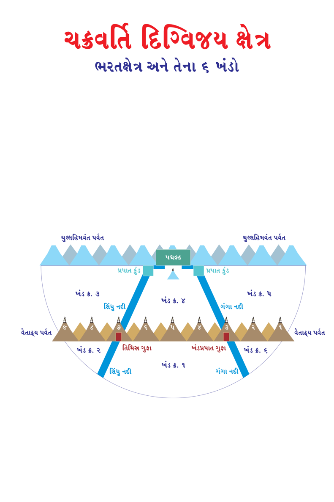
જૈન વિજ્ઞાન
મનુષ્ય જીવ - 127 : ચક્રવર્તી-19 :
ચક્રવર્તી મહારાજાના વિશેષ રત્નોઃ ધનુષ્ય :
શુક્લ પક્ષના બીજના ચંદ્ર અને મેઘધનુષ્યના આકારવાળું હોય છે. શ્રેષ્ઠ ભેંસના સુદ્રઢ, છિદ્રો રહિત, રમણીય શીંગડા જેવું હોય છે. ધનુષ્યનો પાછળનો ભાગ ઉત્તમ નાગ, ભેંસના શીંગડા, કોયલ, ભમરાઓનો સમૂહ, કાળી કાંતિવાળો, તેજથી જાજ્વલ્યમાન અને નિર્મળ હોય છે. શ્રેષ્ઠ કારીગરો દ્વારા બનાવેલ મણિરત્નની ચમકતી ઘૂઘરીઓથી શોભાયમાન હોય છે. સુવર્ણ નિર્મિત ચિન્હોવાળું અને તેમાંથી વિજળીના કિરણો દ્રશ્યમાન થાય છે. બહાદુરીના ચિન્હ સ્વરૂપે દર્દર અને મલયગિરિના શિખરે વિચરતા સિંહના કેશરાલ (વાળ) બાંધ્યા હોય છે. ધનુષ્યની શોભા માટે ચમરી ગાયના વાળ બાંધ્યા હોય છે. અર્ધ ચંદ્રના ચિન્હથી અંકિત હોય છે. તેની જીવા (પ્રત્યંચા, પણછ, દોરી) કાળા, વાદળી, લાલ, પીળા અને સફેદ રંગના સ્નાયુઓથી બંધાયેલી હોય છે.
બાણઃ
બાણનો અંતિમ ભાગ વજ્રમય હોય છે. તેનો આગળનો ભાગ અભેદ્ય હોવાથી વજ્ર જેવો સાર સંપન્ન હોય છે. તેનો પાછળનો ભાગ ઉપર મણિઓ, રત્નો અને સુવર્ણથી જડેલા હોય છે. નિપુણ (કુશળ, શ્રેષ્ઠ) કારીગરોથી બનાવેલા હોય છે. તેની ઉપર વિવિધ પ્રકારના મણિરત્નોથી ચક્રવર્તી મહારાજાનું નામ અંકિત હોય છે.
જે ક્ષેત્ર ઉપર પ્રથમ ચેતવણી સ્વરૂપે ચક્રવર્તી મહારાજા બાણ છોડે ત્યારે અવશ્ય બોલે : (1) ‘મારા બાણમાં અંકિત ક્ષેત્ર સીમાના બહારના ભાગમાં રહેનારા, હે નાગકુમાર, અસુરકુમાર, સુવર્ણકુમાર દેવો! તમે સાંભળો, હું તમને પ્રણામ કરું છું.’ (2) ‘મારા બાણમાં અંકિત ક્ષેત્ર સીમાના અંદરના ભાગમાં રહેનારા, હે નાગકુમાર, અસુરકુમાર, સુવર્ણકુમાર દેવો! તમે સાંભળો, તમે મારી નિશ્રા સ્વીકાર કરો! ’
9
Page 269
જૈનમ્ જયતિ શાસનમ્
મનુષ્ય જીવ - 128 : ચક્રવર્તી-20 :
ચક્રવર્તી મહારાજાના વિશેષ રત્નોઃ
ચક્રરત્નઃ
ચક્રરત્નની નાભિ (કેન્દ્ર, મધ્યભાગ) વજ્રમયી હોય છે. આરા લોહિતાક્ષ રત્નના હોય છે. ધરી સુવર્ણમયી હોય છે. અંદરની પરિધિરૂપ થાળું (ગોળાઇ) વિવિધ પ્રકારના મણિઓથી બનેલ હોય છે. તે ચક્રરત્ન મણિ-મોતીઓના સરોથી વિભૂષિત હોય છે. તે 12 પ્રકારના વાજિંત્રોના નિનાદ અને ઘૂઘરીઓનો રણકાર કરતું રહે છે. તે દિવ્યપ્રભા (પ્રકાશ) યુક્ત હોય છે. બપોરના સમયના સૂર્ય જેવું તેજસ્વી હોય છે. વર્તુળાકાર અને અનેક મણિ-રત્નમય ઘંટડીઓથી વ્યાપ્ત હોય છે. સર્વ ઋતુના(6 ઋતુ) પુષ્પોની સુંગધી માળાઓથી સુશોભિત હોય છે. તે આકાશમાં અવસ્થિત રહે છે. 1,000 યક્ષદેવોથી અધિષ્ઠિત હોય છે. દિવ્યવાદ્યોના ધ્વનિ અને નિર્ઘોષથી આકાશને પૂરિત કરે છે. ચક્રરત્નનું નામ સુદર્શન હોય છે. ચક્રરત્ન ઉત્પત્તિ ચક્રવર્તી મહારાજાની આયુધશાળા (શસ્ત્રાગાર, શસ્ત્રો રાખવાના ભવનો)માં સ્વયં ઉત્પન્ન થાય છે. ચક્રવર્તી મહારાજાને છ ખંડ વિજેતા બનાવવા નેતૃત્વ સમ રાજા- મહારાજાઓ અને દેવી-દેવતાઓને પરાજિત કે આધીન કરવામાં સહાયક અને તત્પર હોય છે. જ્યાં સુધી છ ખંડના એકેક રાજાઓને આધીન કે પરાજિત ન કરે ત્યાં સુધી ચક્રવર્તી મહારાજાના આયુધશાળામાં પુનઃપ્રવેશ નથી કરતું.
10
Page 270
જૈન વિજ્ઞાન
મનુષ્ય જીવ - 129 : ચક્રવર્તી-21 :
ચક્રવર્તી મહારાજાના વિશેષ રત્નોઃ
વર્દ્ધકિરત્ન-1
ચક્રવર્તી મહારાજાના વર્દ્ધકિરત્ન (શ્રેષ્ઠ શિલ્પકાર) આશ્રમ, દ્રોણમુખ, ગામ, પટ્ટન, નગર, સૈન્ય શિબિર (છાવણી), ગૃહ, દુકાનના વિભાગ કરવામાં વાસ્તુ શાસ્ત્ર પ્રમાણે તેના યથા યોગ્ય સ્થાન વગેરે જાણવામાં કુશળ હોય છે. તે વર્દ્ધકિરત્ન વાસ્તુશાસ્ત્ર માન્ય 81 આદિ પદવાળા સર્વ પ્રકારના વાસ્તુના (ઘરના) અનેક ગુણના જાણનાર પંડિતો હોય છે. 45 પ્રકારના દેવની પૂજામાં વિચક્ષ હોય છે. તે વાસ્તુ પરીક્ષાના વિધિજ્ઞ (વિધિના જાણકાર) હોય છે. વિવિધ પરંપરાનુગત મહેલો, ભોજનશાળા, કિલ્લા, શયનગૃહના યથા યોગ્ય નિર્માણમાં નિપુણ (હોંશિયાર) હોય છે.
તે છેદન યોગ્ય, વેધન યોગ્ય, લાકડાની વિધિ તથા ગેરુ કે લાલ રંગના દોરા (નાડાછડી) આદિ બાંધવાની વિધિઓમાં પ્રધાન (મુખ્ય) બુદ્ધિવાળા હોય છે. પાણીમાં રહેલી ભૂમિને પાર કરવાના સાધનોની રચનામાં કુશળ હોય છે. તેઓ પાણીમાં અને ભૂમિમાં ભોંયરાઓ બનાવવા, સુરંગ આદિ મૂકવા, ખાઇઓ ખોદવા વગેરેના કાળજ્ઞ (શુભ સમયના જાણકાર) હોય છે. વર્દ્ધકિરત્ન ચક્રવર્તી મહારાજા માટે દૈવી શક્તિ દ્વારા માત્ર મુહૂર્ત (48 મિનિટ) જેટલા સમયમાં મહેલ કે સૈન્ય માટે આવાસનું નિર્માણ કરી શકે છે.
11
Page 271
જૈનમ્ જયતિ શાસનમ્
મનુષ્ય જીવ - 130 : ચક્રવર્તી-22:
ચક્રવર્તી મહારાજાના વિશેષ રત્નોઃ
વર્દ્ધકિરત્ન-2:
તેઓ શબ્દ શાસ્ત્ર પ્રમાણે વાસ્તુ પ્રદેશ (ઘર) બનાવવાની ભૂમિમાં ઉગેલી ફળ અભિમુખ વેલો, ફળ ન આપનાર વેલો, વૃક્ષો, વૃક્ષના સહારે ચડતી લતાઓ, વેષ્ટનોના ગુણદોષના જાણકાર હોય છે. વર્દ્ધકિરત્ન ગુણાઢ્ય યુક્ત હોય છે. તે 16 પ્રકારના મહેલ, ઘર બનાવવામાં તથા શિલ્પશાસ્ત્ર અનુસાર 64 પ્રકારના ગૃહ નિર્માણ કરવામાં વિશાળ બુદ્ધિવાળા હોય છે.
તે નંદાવર્ત, વર્ધમાનક, સ્વસ્તિક, રૂચક, સર્વતોભદ્ર આદિ વિશેષ પ્રકારના ગૃહો, ધ્વજાઓ, ઇન્દ્ર આદિ દેવોની પ્રતિમાઓ, ધાન્યના કોઠારો, લોકો રહી શકે તેવી પર્વતીય ગુફાઓ, ખાઇ કે પુષ્કરિણીઓ, પાલખી વગેરે વાહન આદિ બનાવવામાં કુશળ હોય છે.
રથઃ
ચક્રવર્તી મહારાજાનો રથ પૃથ્વી ઉપર શીઘ્રગામી (બહુજ જલ્દીથી દોડી શકે) અને ઉત્તમ લક્ષણોથી યુક્ત હોય છે. રથનું નિર્માણ હિમવંત પર્વતના વિવિધ પ્રકારના તિનિશ વૃક્ષોના લાકડામાંથી બનાવવામાં આવે છે.
રથનું ધૂંસર જંબૂનદ સુવર્ણ (લાલ સુવર્ણ)થી બનેલ હોય છે. તેના ચક્ર (પૈડાં) કનકમય, લઘુદંડ જેવા આરાથી યુક્ત હોય છે. રથ પુલાકરત્ન, વજ્રરત્ન, ઇન્દ્રનીલરત્ન, સાસગરત્ન, પ્રવાલરત્ન, સ્ફટિકરત્ન વગેરે વિવિધ રત્નો તથા ચંદ્રકાંત વગેરે મણિ અને મુંગા (પ્રવાલ) થી શોભાયમાન હોય છે.
12
Page 272
જૈન વિજ્ઞાન